Dissecting lentil crop growth in contrasting environments using digital imaging and and genome-wide association studies
The Plant Phenome Journal. (2025) 8(1): e70040.
Introduction
This vignette contains the R code and analysis done for
the paper:
- Derek M. Wright, Sandesh Neupane, Steve Shirtliffe, Tania Gioia, Giuseppina Logozzo, Stefania Marzario, Karsten M.E. Neilson & Kirstin E. Bett. Dissecting lentil crop growth in contrasting environments using digital imaging and and genome-wide association studies. The Plant Phenome Journal. (2025) 8(1): e70040. doi.org/10.1002/ppj2.70040
- https://github.com/derekmichaelwright/AGILE_LDP_UAV
which is follow-up to:
- Sandesh Neupane, Derek Wright, Raul Martinez, Jakob Butler, Jim Weller, Kirstin Bett. Focusing the GWAS Lens on days to flower using latent variable phenotypes derived from global multi-environment trials. The Plant Genome. (2022) 16(1): e20269. doi.org/10.1002/tpg2.20269
- https://github.com/derekmichaelwright/AGILE_LDP_GWAS_Phenology
- Derek M. Wright, Sandesh Neupane, Taryn Heidecker, Teketel A. Haile, Crystal Chan, Clarice J. Coyne, Rebecca J. McGee, Sripada Udupa, Fatima Henkrar, Eleonora Barilli, Diego Rubiales, Tania Gioia, Giuseppina Logozzo, Stefania Marzario, Reena Mehra, Ashutosh Sarker, Rajeev Dhakal, Babul Anwar, Debashish Sarker, Albert Vandenberg & Kirstin E. Bett. Understanding photothermal interactions can help expand production range and increase genetic diversity of lentil (Lens culinaris Medik.). Plants, People, Planet. (2021) 3(2): 171-181. doi.org/10.1002/ppp3.10158
- https://github.com/derekmichaelwright/AGILE_LDP_Phenology
This work done as part of the AGILE and P2IRC projects at the University of Saskatchewan:

https://knowpulse.usask.ca/study/AGILE-Application-of-Genomic-Innovation-in-the-Lentil-Economy

Data
# Load Libraries
library(tidyverse)
library(ggbeeswarm)
library(ggpubr)
library(plotly)
library(htmlwidgets)
library(growthcurver)
library(FactoMineR)
library(ggrepel)
library(lme4)
#
theme_AGL <- theme_bw() +
theme(strip.background = element_rect(colour = "black", fill = NA, size = 0.5),
panel.background = element_rect(colour = "black", fill = NA, size = 0.5),
panel.border = element_rect(colour = "black", size = 0.5),
panel.grid = element_line(color = alpha("black", 0.1), size = 0.5),
panel.grid.minor.x = element_blank(),
panel.grid.minor.y = element_blank())
#
myExpts1 <- c("Metaponto, Italy 2017", "Rosthern, Canada 2017",
"Sutherland, Canada 2017", "Sutherland, Canada 2018")
myExpts2 <- c("It17", "Ro17", "Su17", "Su18")
myColors_Expt <- c("darkred", "darkgreen", "darkblue", "steelblue")
myColors_Cluster <- c("red4", "darkorange3", "blue2", "deeppink3",
"steelblue", "darkorchid4", "darkslategray", "chartreuse4")Manual Phenotypes
# LDP Metadata
myLDP <- read.csv("Data_Manual/myLDP.csv")
# Manual Phenotypes
it17_f <- read.csv("Data_Manual/LDP_Italy_2017_Phenotypes.csv")
ro17_f <- read.csv("Data_Manual/LDP_Rosthern_2017_Phenotypes.csv")
su17_f <- read.csv("Data_Manual/LDP_Sutherland_2017_Phenotypes.csv")
su18_f <- read.csv("Data_Manual/LDP_Sutherland_2018_Phenotypes.csv")Drone phenotypes
Raw Data
Compiled Data
# Function to read in the drone data
readDrone <- function(folder, colNum, xf) {
fnames <- list.files(folder)
xx <- NULL
for(i in fnames) {
xi <- read.csv(paste0(folder, i))
xx <- bind_rows(xx, xi)
}
xx <- xx %>%
rename(Plot=plot_name, Date=mission_date, Sensor=sensor_type) %>%
mutate(Plot = as.integer(Plot)) %>%
gather(Trait, Value, colNum:ncol(.)) %>%
left_join(xf[,1:10], by = "Plot") %>%
filter(!is.na(Entry), !is.na(Value)) %>%
mutate(DAP = as.numeric(as.Date(Date) - as.Date(Planting.Date)),
Value_f = Value) %>%
select(Expt, Row, Column, Plot, Rep, Entry, Name,
Planting.Date, DAP, Date, Sensor, Trait, Value, Value_f)
xx
}
# Load drone data
it17_d <- readDrone(folder = "Data_Drone/LDP_Italy_2017/",
colNum = 6, xf = it17_f)
ro17_d <- readDrone(folder = "Data_Drone/LDP_Rosthern_2017/",
colNum = 7, xf = ro17_f)
su17_d <- readDrone(folder = "Data_Drone/LDP_Sutherland_2017/",
colNum = 7, xf = su17_f)
su18_d <- readDrone(folder = "Data_Drone/LDP_Sutherland_2018/",
colNum = 7, xf = su18_f)Gather manual phenotypes
it17_f <- it17_f %>% gather(Trait, Value, 11:ncol(.))
ro17_f <- ro17_f %>% gather(Trait, Value, 11:ncol(.))
su17_f <- su17_f %>% gather(Trait, Value, 11:ncol(.))
su18_f <- su18_f %>% gather(Trait, Value, 11:ncol(.))Prepare the Data
Filter Outliers and add extra data points for aiding growth curves
# Function to add pseudo-data points to aid growthcurve creation
traitAdd <- function(xx, myTrait, myDAP, myValue) {
for(i in unique(xx$Plot)) {
xi <- xx %>%
filter(Trait == myTrait, Plot == i) %>%
slice(1) %>%
mutate(DAP = myDAP, Sensor = "NA",
Date = as.character(as.Date(Planting.Date) + myDAP),
Value = NA, Value_f = myValue)
xx <- bind_rows(xi,xx)
}
xx
}
# Function to add pseudo-data points during the "stationary phase"
traitPredict <- function(xx, myDAP, myTrait) {
for(i in unique(xx$Plot)) {
xi <- xx %>% filter(Plot == i, Trait == myTrait)
if(sum(!is.na(xi$Value_f)) > 0) {
myVal <- xi %>% pull(Value_f) %>% max(na.rm = T)
xi <- xi %>% slice(1) %>%
mutate(DAP = myDAP, Sensor = "NA",
Date = as.character(as.Date(Planting.Date) + myDAP),
Value = NA,
Value_f = myVal)
xx <- bind_rows(xx, xi)
}
}
xx
}
# Function to find outliers after a certain DAP based on decreases from max
outliers_Maturity <- function(xx, myDAP, myThreshold = 1, predict = T,
myTrait, myOtherTraits ) {
yy <- NULL
for(i in unique(xx$Plot)) {
myMax <- max(xx %>% filter(Plot == i, Trait == myTrait) %>% pull(Value_f), na.rm = T)
xi <- xx %>% filter(Plot == i)
daps_r <- xi %>%
filter(DAP >= myDAP, Trait == myTrait, Value_f < myMax * myThreshold ) %>%
pull(DAP)
daps_r <- c(daps_r, unique(xi$DAP)[unique(xi$DAP)>daps_r])
xi <- xi %>%
mutate(Value_f = ifelse(DAP %in% daps_r, NA, Value_f))
if(predict == T) {
xi <- xi %>%
mutate(Value_f = ifelse(DAP %in% daps_r & Trait == myTrait,
myMax*0.99, Value_f))
for(k in myOtherTraits) {
myMax <- max(xi %>% filter(Trait == k) %>% pull(Value_f), na.rm = T)
xi <- xi %>%
mutate(Value_f = ifelse(DAP %in% daps_r & Trait == k,
myMax*0.99, Value_f))
}
}
yy <- bind_rows(yy, xi)
}
yy
}Italy 2017
# Add pseudo-data for day 0
it17_d <- traitAdd(xx = it17_d, myDAP = 0, myValue = 0,
myTrait = "crop_volume_m3_excess.green.based")
it17_d <- traitAdd(xx = it17_d, myDAP = 0, myValue = 0,
myTrait = "crop_area_m2_excess.green.based")
it17_d <- traitAdd(xx = it17_d, myDAP = 0, myValue = 0,
myTrait = "mean_crop_height_m_excess.green.based")
# Plots with bad data
myPs <- c(619, 782, 713, 746, 10, 722, 796, 717, 829,
874, 767, 903, 866, 8, 707, 876, 24, 958, 614, 618,
397, 2, 687, 12, 456, 665)
# Manually remove outlier data
it17_d <- it17_d %>%
mutate(Value_f = ifelse(Plot %in% myPs, NA, Value_f),
Value_f = ifelse(Plot == 3 & grepl("height|Volume",Trait) & DAP %in% c(101,119),
NA, Value_f),
Value_f = ifelse(Plot == 11 & grepl("height|Volume",Trait) & DAP == 119,
NA, Value_f),
Value_f = ifelse(Plot == 4 & grepl("height|Volume",Trait) & DAP == 101,
NA, Value_f),
Value_f = ifelse(Plot == 5 & grepl("height|Volume",Trait) & DAP == 164,
NA, Value_f),
Value_f = ifelse(Plot == 17 & grepl("height|Volume",Trait) & DAP == 164,
NA, Value_f) )
#
it17_d <- outliers_Maturity(xx = it17_d, myDAP = 163,
myTrait = "mean_crop_height_m_excess.green.based",
myOtherTraits = c("crop_area_m2_excess.green.based",
"crop_volume_m3_excess.green.based",
"median_crop_height_m_excess.green.based",
"max_crop_height_m_excess.green.based") )
it17_d <- outliers_Maturity(xx = it17_d, myDAP = 163,
myTrait = "crop_volume_m3_excess.green.based",
myOtherTraits = c("crop_area_m2_excess.green.based",
"mean_crop_height_m_excess.green.based",
"median_crop_height_m_excess.green.based",
"max_crop_height_m_excess.green.based") )
#
it17_d <- traitPredict(xx = it17_d, myDAP = 180,
myTrait = "crop_volume_m3_excess.green.based")
it17_d <- traitPredict(xx = it17_d, myDAP = 180,
myTrait = "crop_area_m2_excess.green.based")
it17_d <- traitPredict(xx = it17_d, myDAP = 180,
myTrait = "mean_crop_height_m_excess.green.based")
it17_d <- traitPredict(xx = it17_d, myDAP = 210,
myTrait = "crop_volume_m3_excess.green.based")
it17_d <- traitPredict(xx = it17_d, myDAP = 210,
myTrait = "crop_area_m2_excess.green.based")
it17_d <- traitPredict(xx = it17_d, myDAP = 210,
myTrait = "mean_crop_height_m_excess.green.based")
#
it17_d <- traitPredict(xx = it17_d, myDAP = 200,
myTrait = "crop_volume_m3_excess.green.based")
#
xx <- it17_d %>%
filter(Plot %in% c(456,665) & DAP %in% c(93,94),
Trait == "crop_volume_m3_excess.green.based") %>%
mutate(Sensor = "NA", DAP = 10,
Date = as.character(as.Date(Planting.Date) + DAP),
Value = NA, Value_f = 0.001)
it17_d <- it17_d %>% bind_rows(xx)
#
write.csv(it17_d, "Data_Drone/UAV_LDP_It17_data.csv", row.names = F)Rosthern 2017
# Add pseudo-data for day 0
ro17_d <- traitAdd(xx = ro17_d, myDAP = 0, myValue = 0,
myTrait = "crop_volume_m3_blue.ndvi.based")
ro17_d <- traitAdd(xx = ro17_d, myDAP = 0, myValue = 0,
myTrait = "crop_area_m2_blue.ndvi.based")
ro17_d <- traitAdd(xx = ro17_d, myDAP = 0, myValue = 0,
myTrait = "mean_crop_height_m_blue.ndvi.based")
# Manually remove outlier data
ro17_d <- ro17_d %>%
mutate(Value_f = ifelse(Trait == "crop_volume_m3_blue.ndvi.based" &
Date %in% c("2017-06-12", "2017-06-20"),
NA, Value_f),
Value_f = ifelse(Trait == "crop_area_m2_blue.ndvi.based" &
Date %in% c("2017-06-12","2017-06-20","2017-06-27"),
NA, Value_f),
Value_f = ifelse(Trait == "mean_crop_height_m_blue.ndvi.based" &
Date %in% c("2017-06-12","2017-06-20") & Value > 0.2,
NA, Value_f),
Value_f = ifelse(Trait == "mean_crop_height_m_blue.ndvi.based" &
Date == "2017-06-28" & Value > 0.3,
NA, Value_f) )
#
ro17_d <- outliers_Maturity(xx = ro17_d, myDAP = 75,
myTrait = "crop_volume_m3_blue.ndvi.based",
myOtherTraits = c("crop_area_m2_blue.ndvi.based",
"mean_crop_height_m_blue.ndvi.based",
"median_crop_height_m_blue.ndvi.based",
"max_crop_height_m_blue.ndvi.based"))
#
ro17_d <- traitPredict(xx = ro17_d, myDAP = 105,
myTrait = "crop_volume_m3_blue.ndvi.based")
ro17_d <- traitPredict(xx = ro17_d, myDAP = 105,
myTrait = "crop_area_m2_blue.ndvi.based")
ro17_d <- traitPredict(xx = ro17_d, myDAP = 105,
myTrait = "mean_crop_height_m_blue.ndvi.based")
ro17_d <- traitPredict(xx = ro17_d, myDAP = 110,
myTrait = "crop_volume_m3_blue.ndvi.based")
ro17_d <- traitPredict(xx = ro17_d, myDAP = 110,
myTrait = "crop_area_m2_blue.ndvi.based")
ro17_d <- traitPredict(xx = ro17_d, myDAP = 110,
myTrait = "mean_crop_height_m_blue.ndvi.based")
#
write.csv(ro17_d, "Data_Drone/UAV_LDP_Ro17_data.csv", row.names = F)Sutherland 2017
# Prep data
su17_d <- su17_d %>%
mutate(Value_f = ifelse(Value_f == 0, NA, Value_f))
# Add pseudo-data for day 0
su17_d <- traitAdd(xx = su17_d, myDAP = 0, myValue = 0,
myTrait = "crop_volume_m3_blue.ndvi.based")
su17_d <- traitAdd(xx = su17_d, myDAP = 0, myValue = 0,
myTrait = "crop_area_m2_blue.ndvi.based")
su17_d <- traitAdd(xx = su17_d, myDAP = 0, myValue = 0,
myTrait = "mean_crop_height_m_blue.ndvi.based")
# Manually remove outlier data
su17_d <- su17_d %>%
mutate(Value_f = ifelse(Sensor == "ILCE-QX1" & Date == "2017-07-04",
NA, Value_f),
Value_f = ifelse(Trait == "crop_volume_m3_blue.ndvi.based" &
Date == "2017-06-05", NA, Value_f),
Value_f = ifelse(Trait == "crop_area_m2_blue.ndvi.based" &
Date %in% c("2017-06-05", "2017-06-12"),
NA, Value_f),
Value_f = ifelse(Trait == "mean_crop_height_m_blue.ndvi.based" &
Date %in% c("2017-06-05", "2017-06-13", "2017-06-19", "2017-06-24") &
Value_f > 0.2, NA, Value_f),
Value_f = ifelse(Trait %in% c("crop_volume_m3_blue.ndvi.based",
"mean_crop_height_m_blue.ndvi.based") &
Plot == 5573 & DAP == 51,
NA, Value_f),
Value_f = ifelse(Trait %in% c("crop_volume_m3_blue.ndvi.based",
"mean_crop_height_m_blue.ndvi.based") &
Plot == 5588, NA, Value_f),
Value_f = ifelse(Plot == 6030, NA, Value_f))
#
su17_d <- outliers_Maturity(xx = su17_d, myDAP = 76,
myTrait = "crop_volume_m3_blue.ndvi.based",
myOtherTraits = c("crop_area_m2_blue.ndvi.based",
"mean_crop_height_m_blue.ndvi.based",
"median_crop_height_m_blue.ndvi.based",
"max_crop_height_m_blue.ndvi.based"))
#
su17_d <- traitPredict(xx = su17_d, myDAP = 95,
myTrait = "crop_volume_m3_blue.ndvi.based")
su17_d <- traitPredict(xx = su17_d, myDAP = 95,
myTrait = "crop_area_m2_blue.ndvi.based")
su17_d <- traitPredict(xx = su17_d, myDAP = 95,
myTrait = "mean_crop_height_m_blue.ndvi.based")
su17_d <- traitPredict(xx = su17_d, myDAP = 105,
myTrait = "crop_volume_m3_blue.ndvi.based")
su17_d <- traitPredict(xx = su17_d, myDAP = 105,
myTrait = "crop_area_m2_blue.ndvi.based")
su17_d <- traitPredict(xx = su17_d, myDAP = 105,
myTrait = "mean_crop_height_m_blue.ndvi.based")
#
write.csv(su17_d, "Data_Drone/UAV_LDP_Su17_data.csv", row.names = F)Sutherland 2018
# Add pseudo-data for day 0 and day 30
su18_d <- traitAdd(xx = su18_d, myDAP = 0, myValue = 0,
myTrait = "crop_volume_m3_excess.green.based")
su18_d <- traitAdd(xx = su18_d, myDAP = 0, myValue = 0,
myTrait = "crop_area_m2_excess.green.based")
su18_d <- traitAdd(xx = su18_d, myDAP = 0, myValue = 0,
myTrait = "mean_crop_height_m_excess.green.based")
#
su18_d <- traitAdd(xx = su18_d, myDAP = 30, myValue = 0.01,
myTrait = "crop_volume_m3_excess.green.based")
su18_d <- traitAdd(xx = su18_d, myDAP = 30, myValue = 0.05,
myTrait = "crop_area_m2_excess.green.based")
su18_d <- traitAdd(xx = su18_d, myDAP = 30, myValue = 0.01,
myTrait = "mean_crop_height_m_excess.green.based")
# Manually remove outlier data
su18_d <- su18_d %>%
mutate(Value_f = ifelse(DAP %in% c(42,55,58), NA, Value_f),
Value_f = ifelse(Trait == "mean_crop_height_m_excess.green.based" &
DAP < 65 & Value_f > 0.2,
NA, Value_f),
Value_f = ifelse(Plot == 5689, NA, Value_f),
Value_f = ifelse(Plot %in% c(5301,5648) & DAP == 61, NA, Value_f))
#
xx <- su18_d %>% filter(Trait == "mean_crop_height_m_excess.green.based" &
DAP < 65 & Value > 0.2)
#
su18_d <- su18_d %>%
mutate(Value_f = ifelse(paste(Plot, DAP, Trait) %in%
paste(xx$Plot, xx$DAP, "crop_volume_m3_excess.green.based"),
NA, Value_f))
#
su18_d <- traitPredict(xx = su18_d, myDAP = 95,
myTrait = "crop_volume_m3_excess.green.based")
su18_d <- traitPredict(xx = su18_d, myDAP = 95,
myTrait = "crop_area_m2_excess.green.based")
su18_d <- traitPredict(xx = su18_d, myDAP = 95,
myTrait = "mean_crop_height_m_excess.green.based")
su18_d <- traitPredict(xx = su18_d, myDAP = 105,
myTrait = "crop_volume_m3_excess.green.based")
su18_d <- traitPredict(xx = su18_d, myDAP = 105,
myTrait = "crop_area_m2_excess.green.based")
su18_d <- traitPredict(xx = su18_d, myDAP = 105,
myTrait = "mean_crop_height_m_excess.green.based")
#
write.csv(su18_d, "Data_Drone/UAV_LDP_Su18_data.csv", row.names = F)Check Data
# Create plotting function
ggDroneCheck <- function(xd = it17_d, xf = it17_f,
myTitle = NULL,
myFilename = "DataCheck/RawDrone_Italy_2017.pdf",
xt = c("crop_volume_m3_excess.green.based",
"crop_area_m2_excess.green.based",
"mean_ndyi",
"mean_crop_height_m_excess.green.based",
"median_crop_height_m_excess.green.based",
"max_crop_height_m_excess.green.based") ) {
myColors <- c("darkgreen", "darkorange", "darkred")
xd <- xd %>% arrange(Entry)
#
pdf(myFilename, width = 16, height = 10)
for(i in unique(xd$Entry)) {
xdi <- xd %>% filter(Entry == i)
xfi <- xf %>% filter(Entry == i)
j <- unique(xdi$Name)
#
ggPlotDrone <- function(xti=xt[1]) {
yMax <- max(xd%>%filter(Trait==xti)%>%pull(Value_f), na.rm = T)
xMax <- max(c(xd$DAP, xf%>%filter(Trait=="DTM")%>%pull(Value)), na.rm = T)
xdtf <- xfi %>% filter(Trait == "DTF")
xdtm <- xfi %>% filter(Trait == "DTM")
xd <- xdi %>% filter(Trait == xti)
xd2 <- xd %>% filter(!is.na(Value_f))
ggplot(xd, aes(x = DAP, y = Value)) +
geom_line(alpha = 0.2, color = "black", size = 1) +
geom_line(data = xd2, aes(y = Value_f, color = as.factor(Rep)),
size = 1.5, alpha = 0.7) +
geom_point(aes(y = Value_f), color = "red", size = 0.5) +
geom_point(aes(shape = Sensor)) +
geom_vline(data = xdtf, aes(xintercept = Value),
alpha = 0.5, color = "darkgreen") +
geom_vline(data = xdtm, aes(xintercept = Value),
alpha = 0.5, color = "darkorange", lty = 2) +
facet_grid(. ~ paste(Rep, "-", Plot), scales = "free_y") +
scale_color_manual(values = myColors) +
theme_AGL +
theme(legend.position = "none") +
coord_cartesian(ylim = c(0,yMax), xlim = c(0,xMax)) +
labs(y = xti)
}
#
mp1 <- ggPlotDrone(xti = xt[1])
mp2 <- ggPlotDrone(xti = xt[2])
mp3 <- ggPlotDrone(xti = xt[3])
# Append
mp <- ggarrange(mp1, mp2, mp3, ncol = 1, nrow = 3) %>%
annotate_figure(top = text_grob(paste(myTitle, "Entry", i, j)))
print(mp)
}
dev.off()
}Italy 2017
Rosthern 2017
Sutherland 2017
Summarise Drone Data


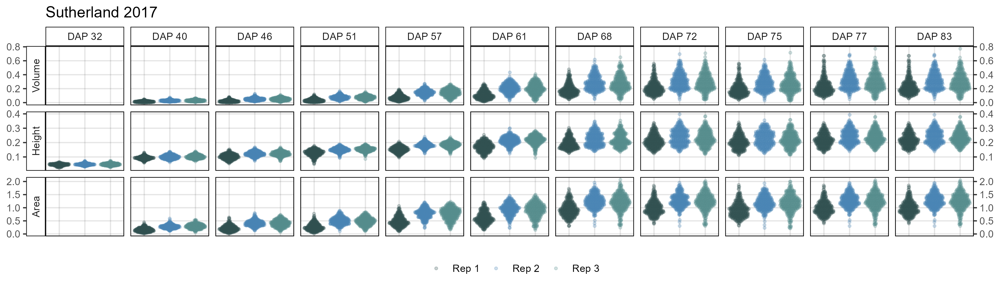

# Create plotting function
ggDroneTrait <- function(xx, myTitle, myDAPs = NULL, myTraits, myTraitNames) {
# Prep data
if(is.null(myDAPs)) { myDAPs <- unique(xx$DAP)[order(unique(xx$DAP))] }
xx <- xx %>% filter(Trait %in% myTraits, DAP %in% myDAPs) %>%
mutate(Trait = plyr::mapvalues(Trait, myTraits, myTraitNames),
Trait = factor(Trait, levels = myTraitNames),
Group = factor(paste("Rep", Rep),
levels = c("Rep 1", "Rep 2", "Rep 3", "Outliers")),
DAP = paste("DAP", DAP),
DAP = factor(DAP, levels = paste("DAP", myDAPs)))
xx <- xx %>% filter(!is.na(Value_f))
# Plot
ggplot(xx, aes(x = Rep, color = Group, pch = Group)) +
geom_quasirandom(aes(y = Value_f), alpha = 0.25) +
facet_grid(Trait ~ DAP, scales = "free_y", switch = "y") +
scale_color_manual(name = NULL,
values = c("darkslategray","steelblue","darkslategray4","black")) +
scale_shape_manual(name = NULL, values = c(20,20,20,10)) +
scale_y_continuous(sec.axis = sec_axis(~ .)) +
theme_AGL +
theme(legend.position = "bottom",
axis.text.x = element_blank(),
axis.ticks.x = element_blank()) +
labs(title = myTitle, y = NULL, x = NULL)
}
# Italy 2017
xx <- it17_d %>%
mutate(DAP = plyr::mapvalues(DAP, c(93, 101, 119, 133, 163),
c(94, 100, 118, 132, 164)))
mp <- ggDroneTrait(xx = xx, myTitle = "Italy 2017",
myDAPs = c(94,100,118,132,164),
myTraits = c("crop_volume_m3_excess.green.based",
"mean_crop_height_m_excess.green.based",
"crop_area_m2_excess.green.based"),
myTraitNames = c("Volume", "Height", "Area"))
ggsave("Additional/ggDroneTrait_It17.png", mp, width = 10, height = 4.5)
# Rosthern 2017
mp <- ggDroneTrait(xx = ro17_d, myTitle = "Rosthern 2017",
myDAPs = c(24,32,40,54,61,67,74,80,89,95),
myTraits = c("crop_volume_m3_blue.ndvi.based",
"mean_crop_height_m_blue.ndvi.based",
"crop_area_m2_blue.ndvi.based"),
myTraitNames = c("Volume", "Height", "Area"))
ggsave("Additional/ggDroneTrait_Ro17.png", mp, width = 12, height = 3.5)
# Sutherland 2017
mp <- ggDroneTrait(xx = su17_d, myTitle = "Sutherland 2017",
myDAPs = c(32,40,46,51,57,61,68,72,75,77,83),
myTraits = c("crop_volume_m3_blue.ndvi.based",
"mean_crop_height_m_blue.ndvi.based",
"crop_area_m2_blue.ndvi.based"),
myTraitNames = c("Volume", "Height", "Area"))
ggsave("Additional/ggDroneTrait_Su17.png", mp, width = 12, height = 3.5)
# Sutherland 2018
mp <- ggDroneTrait(xx = su18_d, myTitle = "Sutherland 2018",
myDAPs = c(42,55,58,61,65,68,72,76,79,86),
myTraits = c("crop_volume_m3_excess.green.based",
"mean_crop_height_m_excess.green.based",
"crop_area_m2_excess.green.based"),
myTraitNames = c("Volume", "Height", "Area"))
ggsave("Additional/ggDroneTrait_Su18.png", mp, width = 12, height = 3.5)Model Growth Curves
# Create function for modeling growth curves
myGrowthCurve <- function(xd, xf, myFolder, myFilename,
myTrait, myOrder = "Entries") {
# Prep data
xd <- xd %>% filter(Trait == myTrait)
xm <- xf %>% select(Plot, Rep, Entry, Name, Expt, Planting.Date) %>%
filter(!duplicated(Plot))
#
xg <- NULL # Growth curve coefficients
xp <- NULL # Predicted Values
for(i in unique(xd$Plot)) {
xgi <- NULL
xdi <- xd %>% arrange(DAP) %>%
filter(Plot == i, !is.na(Value_f))
#
if(nrow(xdi) > 2) {
fit <- SummarizeGrowth(data_t = xdi$DAP,
data_n = xdi$Value_f,
bg_correct = "none")
#
suppressMessages( xgi <- bind_rows(xgi, data.frame(t(c(i, unlist(fit$vals))))) )
#
xgi <- xgi %>% rename(y0=n0, y0_se=n0_se, y0_p=n0_p, x_mid=t_mid)
for(k in 1:(ncol(xgi)-1)) { xgi[,k] <- as.numeric(xgi[,k]) }
xgi <- xgi %>% mutate(y_mid = k/(1 + ((k - y0)/y0) * exp(-r * x_mid)),
b = -((r * x_mid) - y_mid) )
#
myDays <- min(xd$DAP):max(xd$DAP)
xpi <- data.frame(Plot = i, DAP = myDays,
Predicted.Values = xgi$k/(1 + ((xgi$k - xgi$y0)/xgi$y0) * exp(-xgi$r * myDays)))
xp <- bind_rows(xp, xpi)
#
gdays <- xpi %>% filter(DAP > (xgi$x_mid - 3), DAP < (xgi$x_mid + 3))
if(nrow(gdays)>0) {
myLM <- lm(Predicted.Values ~ DAP, gdays)
xgi <- xgi %>% mutate(g.b = myLM[[1]][1],
g.r = myLM[[1]][2] )
}
#
xpi_max <- xpi %>% filter(Predicted.Values >= xgi$k*0.95) %>% arrange(Predicted.Values) %>% slice(1)
if(nrow(xpi_max)==0) {
xpi_max <- xpi %>%
filter(Predicted.Values >= xgi$k*0.94) %>%
arrange(Predicted.Values) %>% slice(1)
}
if(nrow(xpi_max)==0) {
xpi_max <- xpi %>%
filter(Predicted.Values >= xgi$k*0.90) %>%
arrange(Predicted.Values) %>% slice(1)
}
xpi_min <- xpi %>% filter(Predicted.Values >= xgi$k*0.05) %>% arrange(Predicted.Values) %>% slice(1)
xgi$x.max <- ifelse(is.null(nrow(xpi_max)), max(xpi$DAP), xpi_max$DAP)
xgi$x.min <- xpi_min$DAP
xgi$x.d <- xgi$x.max - xgi$x_mid
xg <- bind_rows(xg, xgi)
}
}
#
xg[xg=="0"] <- NA
xg <- xg %>% rename(Plot=1) %>%
mutate(Plot = as.integer(Plot)) %>%
left_join(xm, by = "Plot") %>%
select(Plot, Rep, Entry, Name, Expt, Planting.Date,
r, b, g.r, g.b, k, x.min, x.mid=x_mid, x.max,
x.d, x.gen=t_gen, auc.l=auc_l, auc.e=auc_e, y0, sigma,
r.se=r_se, r.p=r_p, k.se=k_se, k.p=k_p, y0.se=y0_se, y0.p=y0_p, df, note)
xp <- xp %>%
left_join(xm, by = "Plot") %>%
select(Plot, Rep, Entry, Name, Expt, Planting.Date, DAP, Predicted.Values)
#
yMax <- max(xd$Value_f, na.rm = T)
xMax <- max(xd$DAP, na.rm = T)
xpm <- NULL
#
if(myOrder == "Entries") { myOrders <- 1:324 }
if(myOrder == "DTF") { myOrders <- xg %>% arrange(k) %>% pull(Entries) %>% unique() }
#
pdf(paste0(myFolder, "PDF_", myFilename, ".pdf"), width = 8, height = 4)
for(i in myOrders) {
xdi <- xd %>% filter(Entry == i, !is.na(Value_f))
xfi <- xf %>% filter(Entry == i)
xgi <- xg %>% filter(Entry == i)
xpi <- xp %>% filter(Entry == i)
#
xpmi <- xpi %>% group_by(Entry, Name, DAP) %>%
summarise(Predicted.Values = mean(Predicted.Values, na.rm = T))
xpm <- bind_rows(xpm, xpmi)
#
xdtf <- xfi %>% filter(Trait == "DTF")
xdtm <- xfi %>% filter(Trait == "DTM")
xdtf2 <- xdtf %>% group_by(Entry) %>% summarise(Value = mean(Value, na.rm =T))
xdtm2 <- xdtm %>% group_by(Entry) %>% summarise(Value = mean(Value, na.rm =T))
myDays <- min(xdi$DAP):max(xdi$DAP)
#
myTitle <- unique(paste(stringr::str_pad(xdi$Entry, 3, pad = "0"), "|", xdi$Name))
# Plot
mp1 <- ggplot(xdi, aes(x = DAP)) +
geom_vline(data = xdtf, aes(xintercept = Value), color = "darkgreen", alpha = 0.5) +
geom_vline(data = xdtm, aes(xintercept = Value), color = "darkorange", alpha = 0.5) +
geom_point(aes(y = Value_f), color = "red", alpha = 0.7) +
geom_point(aes(y = Value), alpha = 0.5) +
geom_line(data = xpi, aes(y = Predicted.Values), alpha = 0.8) +
facet_grid(. ~ paste(Rep, Plot, sep = "-")) +
coord_cartesian(ylim = c(0,yMax), xlim = c(0,xMax)) +
theme_AGL +
labs(title = myTitle, y = myTrait)
mp2 <- ggplot(xpi, aes(x = DAP, y = Predicted.Values)) +
geom_vline(data = xdtf2, aes(xintercept = Value), color = "darkgreen", alpha = 0.5) +
geom_vline(data = xdtm2, aes(xintercept = Value), color = "darkorange", alpha = 0.5) +
geom_line(alpha = 0.3, aes(group = Plot)) +
geom_line(data = xpmi, color = "red") +
facet_grid(. ~ paste("Entry",Entry)) +
coord_cartesian(ylim = c(0,yMax), xlim = c(0,xMax)) +
theme_AGL +
labs(title = "")
# Append
mp <- ggarrange(mp1, mp2, widths = c(1,0.5))
print(mp)
}
dev.off()
#
list(xd, # Input data
xg, # Growth curve coefficients
xp, # Predicted Values
xpm) # Predicted Values (means)
}
# Create function for plotting the growth curves
ggGrowthCurve <- function(xpm, myTitle = NULL,
myEntries = c(9, 35, 73, 94, 113),
myColors = c("darkgreen", "darkgoldenrod3", "darkred",
"steelblue4", "darkslategray") ) {
# Prep data
if(sum(colnames(xpm)=="Expt")==0) { xpm <- xpm %>% mutate(Expt = myTitle) }
xpe <- xpm %>% filter(Entry %in% myEntries) %>%
mutate(Entry = factor(Entry, levels = myEntries))
# Plot
mp <- ggplot(xpm, aes(x = DAP, y = Predicted.Values, group = Entry, key1 = Name)) +
geom_line(alpha = 0.05) +
geom_line(data = xpe, size = 2, aes(color = paste0(Name," (",Entry,")"))) +
facet_grid(. ~ Expt, scales = "free_x", space = "free_x") +
scale_color_manual(name = NULL, values = myColors) +
theme_AGL +
labs(x = "Days After Planting")
mp
}Italy 2017
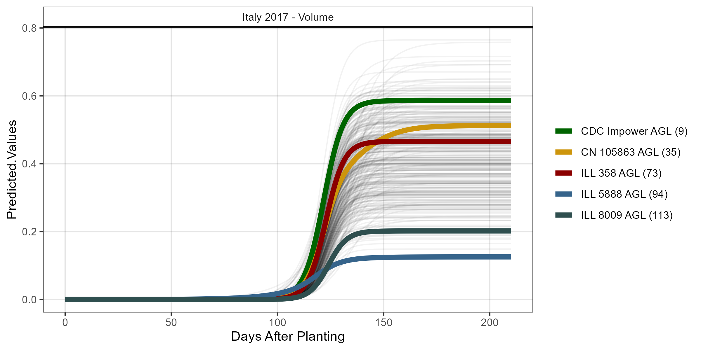
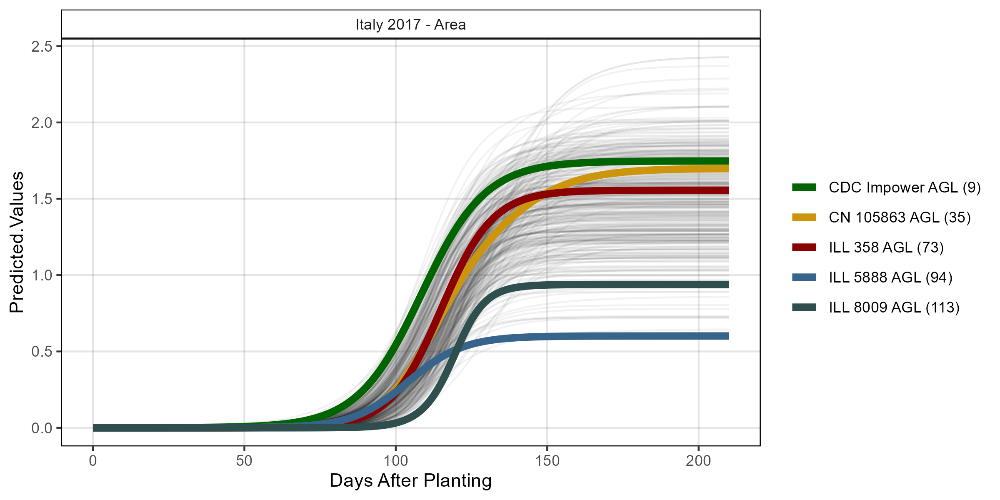

# Volume
it17_gc.v <- myGrowthCurve(xd = it17_d, xf = it17_f,
myFolder = "Additional/", myFilename = "It17_volume",
myTrait = "crop_volume_m3_excess.green.based")
mp <- ggGrowthCurve(xpm = it17_gc.v[[4]], myTitle = "Italy 2017 - Volume")
ggsave("Additional/ggGrowthCurves_It17_volume.png", mp, width = 8, height = 4)
mp <- ggplotly(mp)
saveWidget(mp, file="Additional/ggpGrowthCurves_It17_volume.html")
# Area
it17_gc.a <- myGrowthCurve(xd = it17_d, xf = it17_f,
myFolder = "Additional/", myFilename = "It17_area",
myTrait = "crop_area_m2_excess.green.based")
mp <- ggGrowthCurve(xpm = it17_gc.a[[4]], myTitle = "Italy 2017 - Area")
ggsave("Additional/ggGrowthCurves_It17_area.png", mp, width = 8, height = 4)
mp <- ggplotly(mp)
saveWidget(mp, file="Additional/ggpGrowthCurves_It17_area.html")
# Height
it17_gc.h <- myGrowthCurve(xd = it17_d, xf = it17_f,
myFolder = "Additional/", myFilename = "It17_height",
myTrait = "mean_crop_height_m_excess.green.based")
mp <- ggGrowthCurve(xpm = it17_gc.h[[4]], myTitle = "Italy 2017 - Height")
ggsave("Additional/ggGrowthCurves_It17_height.png", mp, width = 8, height = 4)
mp <- ggplotly(mp)
htmlwidgets::saveWidget(mp, file="Additional/ggpGrowthCurves_It17_height.html")Rosthern 2017


# Volume
ro17_gc.v <- myGrowthCurve(xd = ro17_d, xf = ro17_f,
myFolder = "Additional/", myFilename = "Ro17_volume",
myTrait = "crop_volume_m3_blue.ndvi.based")
mp <- ggGrowthCurve(xpm = ro17_gc.v[[4]], myTitle = "Rosthern 2017 - Volume")
ggsave("Additional/ggGrowthCurves_Ro17_volume.png", mp, width = 8, height = 4)
mp <- ggplotly(mp)
htmlwidgets::saveWidget(mp, file="Additional/ggpGrowthCurves_Ro17_volume.html")
# Area
ro17_gc.a <- myGrowthCurve(xd = ro17_d, xf = ro17_f,
myFolder = "Additional/", myFilename = "Ro17_area",
myTrait = "crop_area_m2_blue.ndvi.based")
mp <- ggGrowthCurve(xpm = ro17_gc.a[[4]], myTitle = "Rosthern 2017 - Area")
ggsave("Additional/ggGrowthCurves_Ro17_area.png", mp, width = 8, height = 4)
mp <- ggplotly(mp)
htmlwidgets::saveWidget(mp, file="Additional/ggpGrowthCurves_Ro17_area.html")
# Height
ro17_gc.h <- myGrowthCurve(xd = ro17_d, xf = ro17_f,
myFolder = "Additional/", myFilename = "Ro17_height",
myTrait = "mean_crop_height_m_blue.ndvi.based")
mp <- ggGrowthCurve(xpm = ro17_gc.h[[4]], myTitle = "Rosthern 2017 - Height")
ggsave("Additional/ggGrowthCurves_Ro17_height.png", mp, width = 8, height = 4)
mp <- ggplotly(mp)
htmlwidgets::saveWidget(mp, file="Additional/ggpGrowthCurves_Ro17_height.html")Sutherland 2017


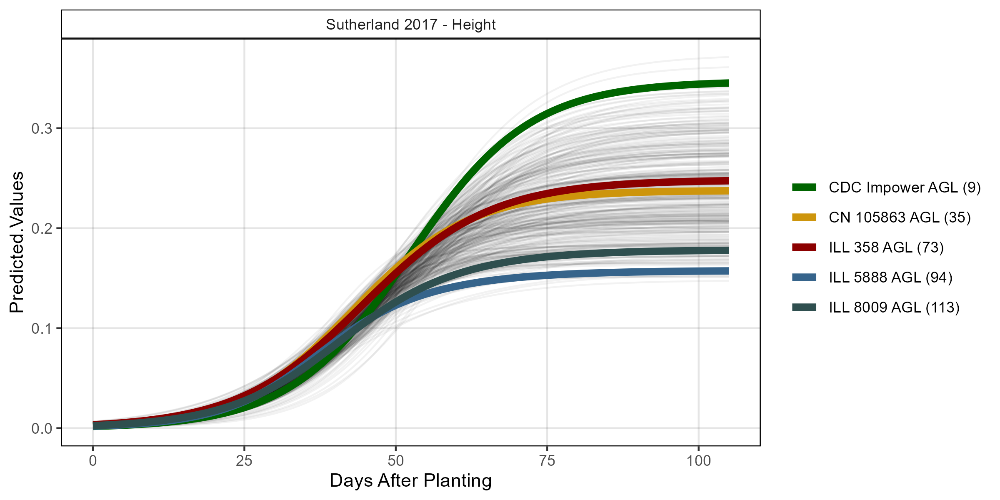
# Volume
su17_gc.v <- myGrowthCurve(xd = su17_d %>% filter(Plot!=5604),
xf = su17_f,
myFolder = "Additional/", myFilename = "Su17_volume",
myTrait = "crop_volume_m3_blue.ndvi.based")
mp <- ggGrowthCurve(xpm = su17_gc.v[[4]], myTitle = "Sutherland 2017 - Volume")
ggsave("Additional/ggGrowthCurves_Su17_volume.png", mp, width = 8, height = 4)
mp <- ggplotly(mp)
htmlwidgets::saveWidget(mp, file="Additional/ggpGrowthCurves_Su17_volume.html")
# Area
su17_gc.a <- myGrowthCurve(xd = su17_d, xf = su17_f,
myFolder = "Additional/", myFilename = "Su17_area",
myTrait = "crop_area_m2_blue.ndvi.based")
mp <- ggGrowthCurve(xpm = su17_gc.a[[4]], myTitle = "Sutherland 2017 - Area")
ggsave("Additional/ggGrowthCurves_Su17_area.png", mp, width = 8, height = 4)
mp <- ggplotly(mp)
htmlwidgets::saveWidget(mp, file="Additional/ggpGrowthCurves_Su17_area.html")
# Height
su17_gc.h <- myGrowthCurve(xd = su17_d, xf = su17_f,
myFolder = "Additional/", myFilename = "Su17_height",
myTrait = "mean_crop_height_m_blue.ndvi.based")
mp <- ggGrowthCurve(xpm = su17_gc.h[[4]], myTitle = "Sutherland 2017 - Height")
ggsave("Additional/ggGrowthCurves_Su17_height.png", mp, width = 8, height = 4)
mp <- ggplotly(mp)
htmlwidgets::saveWidget(mp, file="Additional/ggpGrowthCurves_Su17_height.html")Sutherland 2018


# Volume
su18_gc.v <- myGrowthCurve(xd = su18_d, xf = su18_f,
myFolder = "Additional/", myFilename = "Su18_volume",
myTrait = "crop_volume_m3_excess.green.based")
mp <- ggGrowthCurve(xpm = su18_gc.v[[4]], myTitle = "Sutherland 2018 - Volume")
ggsave("Additional/ggGrowthCurves_Su18_volume.png", mp, width = 8, height = 4)
mp <- ggplotly(mp)
htmlwidgets::saveWidget(mp, file="Additional/ggpGrowthCurves_Su18_volume.html")
# Area
su18_gc.a <- myGrowthCurve(xd = su18_d, xf = su18_f,
myFolder = "Additional/", myFilename = "Su18_area",
myTrait = "crop_area_m2_excess.green.based")
mp <- ggGrowthCurve(xpm = su18_gc.a[[4]], myTitle = "Sutherland 2018 - Area")
ggsave("Additional/ggGrowthCurves_Su18_area.png", mp, width = 8, height = 4)
mp <- ggplotly(mp)
htmlwidgets::saveWidget(mp, file="Additional/ggpGrowthCurves_Su18_area.html")
# Height
su18_gc.h <- myGrowthCurve(xd = su18_d, xf = su18_f,
myFolder = "Additional/", myFilename = "Su18_height",
myTrait = "mean_crop_height_m_excess.green.based")
mp <- ggGrowthCurve(xpm = su18_gc.h[[4]], myTitle = "Sutherland 2018 - Height")
ggsave("Additional/ggGrowthCurves_Su18_height.png", mp, width = 8, height = 4)
mp <- ggplotly(mp)
htmlwidgets::saveWidget(mp, file="Additional/ggpGrowthCurves_Su18_height.html")Figure 1 - EnvData

# Prep data
xE <- read.csv("https://raw.githubusercontent.com/derekmichaelwright/AGILE_LDP_Phenology/master/data/data_env.csv") %>%
rename(`Days After Planting`=DaysAfterPlanting) %>%
filter(Expt %in% myExpts1) %>%
select(Expt, `Days After Planting`, DayLength, Temp_mean) %>%
gather(Trait, Value, DayLength, Temp_mean) %>%
mutate(Unit = ifelse(Trait == "DayLength", "Hours", "Degrees Celcius"),
Trait = plyr::mapvalues(Trait, c("DayLength", "Temp_mean"),
c("DayLength", "Mean Temperature")))
yy <- bind_rows(it17_f %>% filter(Trait == "DTF"),
ro17_f %>% filter(Trait == "DTF"),
su17_f %>% filter(Trait == "DTF"),
su18_f %>% filter(Trait == "DTF") ) %>%
mutate(Expt = plyr::mapvalues(Expt, myExpts2, myExpts1)) %>%
group_by(Expt, Name) %>%
summarise(Value = mean(Value, na.rm = T))
# Plot
mp1 <- ggplot(yy, aes(x = Value, fill = Expt)) +
geom_density(alpha = 0.7) +
scale_fill_manual(values = myColors_Expt) +
scale_x_continuous(breaks = seq(30, 160, by = 10)) +
theme_AGL +
theme(legend.position = "none") +
labs(title = "A) Days To Flower",
x = "Days After Planting", y = "Density")
#
mp2 <- ggplot(xE %>% filter(Trait == "DayLength"),
aes(x = `Days After Planting`, y = Value, color = Expt)) +
geom_line(size = 1.25, alpha = 0.7) +
scale_color_manual(values = myColors_Expt) +
theme_AGL +
theme(legend.position = "bottom") +
labs(title = "B) Day Length",
y = "Hours", x = "Days After Planting")
#
mp3 <- ggplot(xE %>% filter(Trait == "Mean Temperature"),
aes(x = `Days After Planting`, y = Value, color = Expt)) +
geom_line(size = 0.75, alpha = 0.7) +
scale_color_manual(values = myColors_Expt) +
theme_AGL +
theme(legend.position = "bottom") +
labs(title = "C) Mean Temperature",
y = "Degrees Celcius", x = "Days After Planting")
# Append
mp <- ggarrange(mp1, ggarrange(mp2, mp3, ncol = 2, nrow = 1,
common.legend = T, legend = "bottom"),
ncol = 1, nrow = 2, heights = c(0.75,1) )
ggsave("Figure_01.jpg", mp, width = 8, height = 6, dpi = 600, bg = "white")Figure 2 - Growth Curve Coefficients
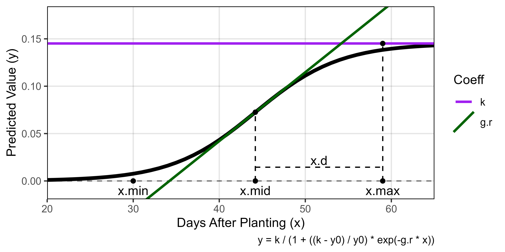
# Create plotting function
ggGrowthCoefs <- function(xd, xf, myPlot, myYmax = NULL,
minDAP = NULL, maxDAP = NULL,
myTitle = NULL, mySubtitle = F) {
# Prep data
if(is.null(minDAP)) { minDAP <- min(xd[[3]]$DAP) }
if(is.null(maxDAP)) { maxDAP <- max(xd[[3]]$DAP) }
if(is.null(myYmax)) { myYmax <- max(xd[[2]]$k) }
#
x1 <- xd[[2]] %>% filter(Plot == myPlot)
x2 <- xd[[3]] %>% filter(Plot == myPlot)
#
if(mySubtitle == T) {
mySubtitle <- paste("Plot", x1$Plot, "| Entry", x1$Entry, "|", x1$Name)
} else { mySubtitle <- NULL }
# Plot
ggplot(x1) +
#
geom_hline(yintercept = 0, lty = 2, alpha = 0.5) +
geom_line(data = x2, aes(x = DAP, y = Predicted.Values), size = 1.5) +
#
geom_hline(aes(yintercept = k, color = "k"), size = 1) +
geom_abline(aes(slope = g.r, intercept = g.b, color = "g.r"), size = 1) +
geom_point(aes(x = x.mid, y = k/2)) +
#
geom_point(aes(x = x.min), y = 0) +
geom_text(aes(x = x.min), y = -0.01, label = "x.min") +
#
geom_segment(y = 0, aes(x = x.mid, xend = x.mid, yend = k/2), lty = 2) +
geom_point(y = 0, aes(x = x.mid)) +
geom_text(y = -0.01, aes(x = x.mid, label = "x.mid")) +
#
geom_segment(y = 0, aes(x = x.max, xend = x.max, yend = k), lty = 2) +
geom_point(aes(x = x.max, y = k)) +
geom_point(aes(x = x.max, y = 0)) +
geom_text(aes(x = x.max, y = -0.01), label = "x.max") +
#
geom_segment(aes(x = x.mid, xend = x.max, y = k/10, yend = k/10), lty = 2) +
geom_text(aes(x = x.max-((x.max-x.mid)/2), y = 1.5*k/10), label = "x.d") +
#
theme_AGL +
scale_color_manual(name = "Coeff", breaks = c("k","r","g.r"),
values = c("purple","steelblue","darkgreen")) +
scale_x_continuous(limits = c(minDAP, maxDAP), expand = c(0,0)) +
ylim(c(-0.01, myYmax)) +
labs(title = myTitle, subtitle = mySubtitle,
y = "Predicted Value (y)", x = "Days After Planting (x)",
caption = "y = k / (1 + ((k - y0) / y0) * exp(-g.r * x))")
}
#
mp <- ggGrowthCoefs(xd = ro17_gc.v, xf = ro17_f, myPlot = 6322,
myYmax = 0.175, minDAP = 20, maxDAP = 65)
ggsave("Figure_02.jpg", mp, width = 6, height = 3, dpi = 600)Additional Figures 1 - Growth Curve Coefficients


# Italy - Entry 221 vs 295
mp1 <- ggGrowthCoefs(xd = it17_gc.v, xf = it17_f, myPlot = 229,
myTitle = "Italy 2017 - Entry 221",
myYmax = 0.5, minDAP = 100, maxDAP = 145)
mp2 <- ggGrowthCoefs(xd = it17_gc.v, xf = it17_f, myPlot = 225,
myTitle = "Italy 2017 - Entry 295",
myYmax = 0.5, minDAP = 100, maxDAP = 145)
mp <- ggarrange(mp1, mp2, ncol = 1)
ggsave("Additional/Additional_Figure_01_1.png", mp, width = 8, height = 6)
# Rosthern - Entry 76 vs 94
mp1 <- ggGrowthCoefs(xd = ro17_gc.v, xf = ro17_f, myPlot = 6986,
myTitle = "Rosthern 2017 - Entry 76",
myYmax = 0.25, minDAP = 25, maxDAP = 65)
mp2 <- ggGrowthCoefs(xd = ro17_gc.v, xf = ro17_f, myPlot = 6322,
myTitle = "Rosthern 2017 - Entry 94",
myYmax = 0.25, minDAP = 25, maxDAP = 65)
mp <- ggarrange(mp1, mp2, ncol = 1)
ggsave("Additional/Additional_Figure_01_2.png", mp, width = 8, height = 6)
# Entry 107 - Italy vs Rosthern
mp1 <- ggGrowthCoefs(xd = it17_gc.v, xf = it17_f, myPlot = 242,
myTitle = "Italy 2017 - Entry 107",
myYmax = 0.45, minDAP = 0, maxDAP = 155)
mp2 <- ggGrowthCoefs(xd = ro17_gc.v, xf = ro17_f, myPlot = 6380,
myTitle = "Rosthern 2017 - Entry 107",
myYmax = 0.45, minDAP = 0, maxDAP = 155)
mp <- ggarrange(mp1, mp2, ncol = 1)
ggsave("Additional/Additional_Figure_01_3.png", mp, width = 8, height = 6)Supplemental Figure 1 - Drone Data

# Create plotting function
ggDroneTrait <- function(xx, myTitle, myDAPs = NULL, myTraits,
myTraitNames = myTraits ) {
# Prep data
if(is.null(myDAPs)) { myDAPs <- unique(xx$DAP)[order(unique(xx$DAP))] }
xx <- xx %>% filter(Trait %in% myTraits, DAP %in% myDAPs) %>%
mutate(Trait = plyr::mapvalues(Trait, myTraits, myTraitNames),
Trait = factor(Trait, levels = myTraitNames),
Rep = factor(Rep),
DAP = paste("DAP", DAP),
DAP = factor(DAP, levels = paste("DAP", myDAPs)) ) %>%
filter(!is.na(Value_f), !is.na(Value))
# Plot
ggplot(xx, aes(x = Rep, color = Rep, pch = Rep)) +
geom_quasirandom(aes(y = Value_f), size = 0.3, alpha = 0.7) +
facet_grid(Trait ~ DAP, scales = "free_y", switch = "y") +
scale_color_manual(values = c("darkslategray","slategray4","darkslategray4")) +
scale_shape_manual(values = c(16,15,18)) +
scale_y_continuous(sec.axis = sec_axis(~ .)) +
theme_AGL +
theme(strip.placement = "outside",
axis.text.x = element_blank(),
axis.ticks.x = element_blank()) +
guides(colour = guide_legend(override.aes = list(size = 3, alpha = 1))) +
labs(title = myTitle, y = NULL, x = NULL,
caption = paste("Number of data points =", nrow(xx)))
}
# Italy 2017
xx <- it17_d %>%
mutate(DAP = plyr::mapvalues(DAP, c(93, 101, 119, 133, 163),
c(94, 100, 118, 132, 164)))
mp1 <- ggDroneTrait(xx = xx, myTitle = "A) Metaponto, Italy 2017 (It17)",
myDAPs = c(94,100,118,132,164),
myTraits = c("crop_volume_m3_excess.green.based",
"mean_crop_height_m_excess.green.based",
"crop_area_m2_excess.green.based"),
myTraitNames = c("Volume", "Height", "Area"))
# Rosthern 2017
mp2 <- ggDroneTrait(xx = ro17_d, myTitle = "B) Rosthern, Canada 2017 (Ro17)",
myDAPs = c(24,32,40,54,61,67,74,80,89,95),
myTraits = c("crop_volume_m3_blue.ndvi.based",
"mean_crop_height_m_blue.ndvi.based",
"crop_area_m2_blue.ndvi.based"),
myTraitNames = c("Volume", "Height", "Area"))
# Sutherland 2017
mp3 <- ggDroneTrait(xx = su17_d, myTitle = "C) Sutherland, Canada 2017 (Su17)",
myDAPs = c(32,40,46,51,57,61,68,72,75,77,83),
myTraits = c("crop_volume_m3_blue.ndvi.based",
"mean_crop_height_m_blue.ndvi.based",
"crop_area_m2_blue.ndvi.based"),
myTraitNames = c("Volume", "Height", "Area"))
# Sutherland 2018
mp4 <- ggDroneTrait(xx = su18_d, myTitle = "D) Sutherland, Canada 2018 (Su18)",
myDAPs = c(42,55,58,61,65,68,72,76,79,86),
myTraits = c("crop_volume_m3_excess.green.based",
"mean_crop_height_m_excess.green.based",
"crop_area_m2_excess.green.based"),
myTraitNames = c("Volume", "Height", "Area"))
# Append
mp <- ggarrange(mp1, mp2, mp3, mp4, ncol = 1, nrow = 4,
common.legend = T, legend = "bottom")
ggsave("Supplemental_Figure_01.jpg", mp,
width = 8, height = 11, dpi = 600, bg = "white")


ggsave("Additional/Supplemental_Figure_01_A.png", mp1, width = 8, height = 3.5)
ggsave("Additional/Supplemental_Figure_01_B.png", mp2, width = 12, height = 3.5)
ggsave("Additional/Supplemental_Figure_01_C.png", mp3, width = 12, height = 3.5)
ggsave("Additional/Supplemental_Figure_01_D.png", mp4, width = 12, height = 3.5)Supplemental Figure 2 - Correlation Plots

# Create plotting function
ggDroneCorr <- function(xd, xf, myTitle, myTrait, xLab, yLab, myColor = "darkgreen") {
# Prep data
xd <- xd[[2]] %>% select(Plot, k)
xf <- xf %>% filter(Trait == myTrait) %>% select(Plot, Entry, Name, Value)
xx <- left_join(xf, xd, by = "Plot") %>%
group_by(Entry, Name) %>%
summarise(Value = mean(Value, na.rm = T),
k = mean(k, na.rm = T)) %>%
ungroup()
#
myCorr <- cor(xx$Value, xx$k, use = "complete.obs")^2
myLabel <- paste("italic(R)^2 ==", round(myCorr,2))
# Plot
ggplot(xx, aes(x = Value, y = k)) +
stat_smooth(geom = "line", method = "lm", se = F,
size = 1, color = "black") +
geom_point(alpha = 0.6, pch = 16, color = myColor) +
geom_label(label = myLabel, hjust = 0, parse = T,
x = -Inf, y = Inf, vjust = 1 ) +
facet_grid(. ~ as.character(myTitle)) +
theme_AGL +
labs(x = xLab, y = yLab)
}
#
# Height x Height
#
mp1 <- ggDroneCorr(xd = it17_gc.h, xf = it17_f, myColor = myColors_Expt[1],
myTitle = "Metaponto, Italy 2017", yLab = "Plot Height (UAV)",
myTrait = "Canopy.Height", xLab = "Canopy Height (Manual)")
mp2 <- ggDroneCorr(xd = ro17_gc.h, xf = ro17_f, myColor = myColors_Expt[2],
myTitle = "Rosthern, Canada 2017", yLab = "Plot Height (UAV)",
myTrait = "Canopy.Height", xLab = "Canopy Height (Manual)")
mp3 <- ggDroneCorr(xd = su17_gc.h, xf = su17_f, myColor = myColors_Expt[3],
myTitle = "Sutherland, Canada 2017", yLab = "Plot Height (UAV)",
myTrait = "Canopy.Height", xLab = "Canopy Height (Manual)")
mp4 <- ggDroneCorr(xd = su18_gc.h, xf = su18_f, myColor = myColors_Expt[4],
myTitle = "Sutherland, Canada 2018", yLab = "Plot Height (UAV)",
myTrait = "CanopyHeight", xLab = "Canopy Height (Manual)")
# Append
mp_a <- ggarrange(mp1, mp2, mp3, mp4, ncol = 4, nrow = 1) %>%
annotate_figure(fig.lab = "A) Plot Height (UAV) x Canopy Height (Manual)",
fig.lab.pos = "top.left", fig.lab.size = 13, top = "") +
theme(plot.margin=unit(c(0.1,0,0,0), 'cm'))
#
# Volume x Biomass
#
mp1 <- ggDroneCorr(xd = it17_gc.v, xf = it17_f, myColor = myColors_Expt[1],
myTitle = "Metaponto, Italy 2017", yLab = "Plot Volume (UAV)",
myTrait = "Plot.Biomass", xLab = "Total Biomass (Manual)")
mp2 <- ggDroneCorr(xd = ro17_gc.v, xf = ro17_f, myColor = myColors_Expt[2],
myTitle = "Rosthern, Canada 2017", yLab = "Plot Volume (UAV)",
myTrait = "Plot.Biomass", xLab = "Total Biomass (Manual)")
mp3 <- ggDroneCorr(xd = su17_gc.v, xf = su17_f, myColor = myColors_Expt[3],
myTitle = "Sutherland, Canada 2017", yLab = "Plot Volume (UAV)",
myTrait = "Plot.Biomass", xLab = "Total Biomass (Manual)")
mp4 <- ggDroneCorr(xd = su18_gc.v, xf = su18_f, myColor = myColors_Expt[4],
myTitle = "Sutherland, Canada 2018", yLab = "Plot Volume (UAV)",
myTrait = "Plot.Biomass", xLab = "Total Biomass (Manual)")
# Append
mp_b <- ggarrange(mp1, mp2, mp3, mp4, ncol = 4, nrow = 1) %>%
annotate_figure(fig.lab = "B) Plot Volume (UAV) x Total Biomass (Manual)",
fig.lab.pos = "top.left", fig.lab.size = 13, top = "") +
theme(plot.margin=unit(c(0.1,0,0,0), 'cm'))
#
# Volume x Biomass
#
mp1 <- ggDroneCorr(xd = it17_gc.v, xf = it17_f, myColor = myColors_Expt[1],
myTitle = "Metaponto, Italy 2017", yLab = "Plot Volume (UAV)",
myTrait = "Straw.Biomass", xLab = "Straw Biomass (Manual)")
mp2 <- ggDroneCorr(xd = ro17_gc.v, xf = ro17_f, myColor = myColors_Expt[2],
myTitle = "Rosthern, Canada 2017", yLab = "Plot Volume (UAV)",
myTrait = "Straw.Biomass", xLab = "Straw Biomass (Manual)")
mp3 <- ggDroneCorr(xd = su17_gc.v, xf = su17_f, myColor = myColors_Expt[3],
myTitle = "Sutherland, Canada 2017", yLab = "Plot Volume (UAV)",
myTrait = "Straw.Biomass", xLab = "Straw Biomass (Manual)")
mp4 <- ggDroneCorr(xd = su18_gc.v, xf = su18_f, myColor = myColors_Expt[4],
myTitle = "Sutherland, Canada 2018", yLab = "Plot Volume (UAV)",
myTrait = "Straw.Biomass", xLab = "Straw Biomass (Manual)")
# Append
mp_c <- ggarrange(mp1, mp2, mp3, mp4, ncol = 4, nrow = 1) %>%
annotate_figure(fig.lab = "C) Plot Volume (UAV) x Straw Biomass (Manual)",
fig.lab.pos = "top.left", fig.lab.size = 13, top = "") +
theme(plot.margin=unit(c(0.1,0,0,0), 'cm'))
# Append All
mp <- ggarrange(mp_a, mp_b, mp_c, nrow = 3)
ggsave("Supplemental_Figure_02.jpg", mp, width = 10, height = 8, dpi = 600, bg = "white")Additional Figures 2 - Volume x Yield x Arch

# Volume x Yield
mp1 <- ggDroneCorr(xd = it17_gc.v, xf = it17_f, myColor = myColors_Expt[1],
myTitle = "Italy 2017", yLab = "Plot Volume (UAV)",
myTrait = "Seed.Mass", xLab = "Plot Yield (Manual)")
mp2 <- ggDroneCorr(xd = ro17_gc.v, xf = ro17_f, myColor = myColors_Expt[2],
myTitle = "Rosthern 2017", yLab = "Plot Volume (UAV)",
myTrait = "Seed.Mass", xLab = "Plot Yeild (Manual)")
mp3 <- ggDroneCorr(xd = su17_gc.v, xf = su17_f, myColor = myColors_Expt[3],
myTitle = "Sutherland 2017", yLab = "Plot Volume (UAV)",
myTrait = "Seed.Mass", xLab = "Plot Yield (Manual)")
mp4 <- ggDroneCorr(xd = su18_gc.v, xf = su18_f, myColor = myColors_Expt[4],
myTitle = "Sutherland 2018", yLab = "Plot Volume (UAV)",
myTrait = "Seed.Mass", xLab = "Plot Yield (Manual)")
# Append
mp_a <- ggarrange(mp1, mp2, mp3, mp4, ncol = 4, nrow = 1) %>%
annotate_figure(fig.lab = "A) Plot Volume (UAV) x Plot Yield (Manual)",
fig.lab.pos = "top.left", fig.lab.size = 13, top = "") +
theme(plot.margin=unit(c(0.1,0,0,0), 'cm'))
#
# Volume x Growth Habit
#
mp1 <- ggDroneCorr(xd = it17_gc.v, xf = it17_f, myColor = myColors_Expt[1],
myTitle = "Italy 2017", yLab = "Plot Volume (Drone)",
myTrait = "Nodes.At.Flower", xLab = "Nodes at Flowering (Manual)")
mp2 <- ggDroneCorr(xd = ro17_gc.v, xf = ro17_f, myColor = myColors_Expt[2],
myTitle = "Rosthern 2017", yLab = "Plot Volume (Drone)",
myTrait = "Nodes.At.Flower", xLab = "Nodes at Flowering (Manual)")
mp3 <- ggDroneCorr(xd = su17_gc.v, xf = su17_f, myColor = myColors_Expt[3],
myTitle = "Sutherland 2017", yLab = "Plot Volume (Drone)",
myTrait = "Nodes.At.Flower", xLab = "Nodes at Flowering (Manual)")
mp4 <- ggDroneCorr(xd = su18_gc.v, xf = su18_f, myColor = myColors_Expt[4],
myTitle = "Sutherland 2018", yLab = "Plot Volume (Drone)",
myTrait = "Growth.Habit", xLab = "Growth Habit (Manual)")
# Append
mp_b <- ggarrange(mp1, mp2, mp3, mp4, ncol = 4, nrow = 1) %>%
annotate_figure(fig.lab = "A) Plot Volume (UAV) x Growth Habit (Manual)",
fig.lab.pos = "top.left", fig.lab.size = 13, top = "") +
theme(plot.margin=unit(c(0.1,0,0,0), 'cm'))
# Append All
mp <- ggarrange(mp_a, mp_b, nrow = 2)
ggsave("Additional/Additional_Figure_02.png", mp, width = 10, height = 6, dpi = 600, bg = "white")Figure 3 - Growth Curves

# Create plotting function
ggGrowthCurve <- function(xpm, xF, myTitle = NULL,
xlab = "Days After Planting", ylab = "Predicted Values",
myEntries = c(19, 94, 107, 27),
myColors = c("chartreuse4", "red4", "blue2", "steelblue"),
linesize = 1.75 ) {
# Prep data
xF <- xF %>% filter(Trait == "DTF", Entry %in% myEntries) %>%
group_by(Name, Entry) %>% summarise(Value = mean(Value, na.rm = T))
if(sum(colnames(xpm)=="Expt")==0) { xpm <- xpm %>% mutate(Expt = myTitle) }
xpe <- xpm %>% filter(Entry %in% myEntries) %>%
mutate(Entry = factor(Entry, levels = myEntries)) %>%
arrange(Entry) %>%
mutate(Name = factor(Name))
# Plot
mp <- ggplot(xpm, aes(x = DAP, y = Predicted.Values, group = Entry, key1 = Name)) +
geom_line(alpha = 0.1) +
geom_line(data = xpe, size = linesize, alpha = 0.8,
aes(color = Name)) +
geom_point(data = xF, y = 0, size = 1.5, alpha = 0.8, pch = 16,
aes(x = Value, color = Name)) +
facet_grid(. ~ Expt, scales = "free_x", space = "free_x") +
scale_color_manual(name = "Accession", values = myColors) +
theme_AGL +
labs(x = xlab, y = ylab)
mp
}# Italy 2017
mp1 <- ggGrowthCurve(xpm = it17_gc.v[[4]], xF = it17_f, xlab = "",
ylab = "Plot Volume", myTitle = "Metaponto, Italy 2017")
mp2 <- ggGrowthCurve(xpm = it17_gc.h[[4]], xF = it17_f, xlab = "",
ylab = "Plot Height", myTitle = "Metaponto, Italy 2017")
mp3 <- ggGrowthCurve(xpm = it17_gc.a[[4]], xF = it17_f, xlab = "",
ylab = "Plot Area", myTitle = "Metaponto, Italy 2017")
# Sutherland 2017
mp4 <- ggGrowthCurve(xpm = su17_gc.v[[4]], xF = su17_f, xlab = "",
ylab = "", myTitle = "Sutherland, Canada 2017")
mp5 <- ggGrowthCurve(xpm = su17_gc.h[[4]], xF = su17_f, xlab = "",
ylab = "", myTitle = "Sutherland, Canada 2017")
mp6 <- ggGrowthCurve(xpm = su17_gc.a[[4]], xF = su17_f, xlab = "Days After Planting",
ylab = "", myTitle = "Sutherland, Canada 2017")
# Rosthern 2017
mp7 <- ggGrowthCurve(xpm = ro17_gc.v[[4]], xF = ro17_f, xlab = "",
ylab = "", myTitle = "Rosthern, Canada 2017")
mp8 <- ggGrowthCurve(xpm = ro17_gc.h[[4]], xF = ro17_f, xlab = "",
ylab = "", myTitle = "Rosthern, Canada 2017")
mp9 <- ggGrowthCurve(xpm = ro17_gc.a[[4]], xF = ro17_f, xlab = "",
ylab = "", myTitle = "Rosthern, Canada 2017")
# Append
mp <- ggarrange(mp1, mp4, mp7, mp2, mp5, mp8, mp3, mp6, mp9,
ncol = 3, nrow = 3, common.legend = T)
ggsave("Figure_03.jpg", mp, width = 8, height = 6, dpi = 600, bg = "white")Additional Figures 3 - Growth Curves

# Plot
mp1 <- ggGrowthCurve(xpm = it17_gc.h[[4]], xF = it17_f,
xlab = "Days After Planting", ylab = "Plot Height",
myTitle = "Metaponto, Italy 2017")
mp2 <- ggGrowthCurve(xpm = su17_gc.h[[4]], xF = su17_f,
xlab = "Days After Planting", ylab = "",
myTitle = "Sutherland, Canada 2017")
mp3 <- ggGrowthCurve(xpm = it17_gc.a[[4]], xF = it17_f,
xlab = "Days After Planting", ylab = "Plot Area",
myTitle = "Metaponto, Italy 2017")
mp4 <- ggGrowthCurve(xpm = su17_gc.a[[4]], xF = su17_f,
xlab = "Days After Planting", ylab = "",
myTitle = "Sutherland, Canada 2017")
# Append
mp <- ggarrange(mp1, mp2, mp3, mp4, ncol = 2, nrow = 2, common.legend = T)
ggsave("Additional/Additional_Figure_03_1.png", mp,
width = 8, height = 6, dpi = 600, bg = "white")
# Prep data - Clusters 1 + 7
myEntries = c(83, 94)
myColors = myColors_Cluster[c(7,1)]
# Plot
mp1 <- ggGrowthCurve(xpm = it17_gc.v[[4]], xF = it17_f,
myEntries = myEntries, myColors = myColors,
myTitle = "Italy 2017 - Volume", linesize = 3)
mp2 <- ggGrowthCurve(xpm = it17_gc.h[[4]], xF = it17_f,
myEntries = myEntries, myColors = myColors,
myTitle = "Italy 2017 - Height", linesize = 3)
mp3 <- ggGrowthCurve(xpm = it17_gc.a[[4]], xF = it17_f,
myEntries = myEntries, myColors = myColors,
myTitle = "Italy 2017 - Area", linesize = 3)
#
mp4 <- ggGrowthCurve(xpm = su17_gc.v[[4]], xF = su17_f,
myEntries = myEntries, myColors = myColors,
myTitle = "Sutherland 2017 - Volume", linesize = 3)
mp5 <- ggGrowthCurve(xpm = su17_gc.h[[4]], xF = su17_f,
myEntries = myEntries, myColors = myColors,
myTitle = "Sutherland 2017 - Height", linesize = 3)
mp6 <- ggGrowthCurve(xpm = su17_gc.a[[4]], xF = su17_f,
myEntries = myEntries, myColors = myColors,
myTitle = "Sutherland 2017 - Area", linesize = 3)
# Append
mpA <- ggarrange(mp1, mp4, mp2, mp5, mp3, mp6, ncol = 2, nrow = 3, common.legend = T)
ggsave("Additional/Additional_Figure_03_2.png", mpA,
width = 10, height = 8, dpi = 600, bg = "white")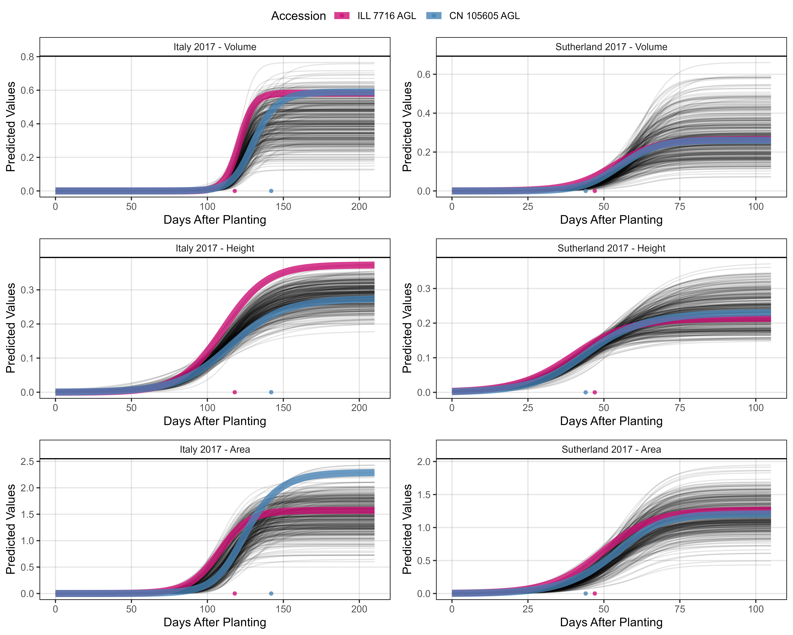
# Prep data - Clusters 4 + 5
myEntries = c(107, 27)
myColors = myColors_Cluster[c(4,5)]
# Plot
mp1 <- ggGrowthCurve(xpm = it17_gc.v[[4]], xF = it17_f,
myEntries = myEntries, myColors = myColors,
myTitle = "Italy 2017 - Volume", linesize = 3)
mp2 <- ggGrowthCurve(xpm = it17_gc.h[[4]], xF = it17_f,
myEntries = myEntries, myColors = myColors,
myTitle = "Italy 2017 - Height", linesize = 3)
mp3 <- ggGrowthCurve(xpm = it17_gc.a[[4]], xF = it17_f,
myEntries = myEntries, myColors = myColors,
myTitle = "Italy 2017 - Area", linesize = 3)
#
mp4 <- ggGrowthCurve(xpm = su17_gc.v[[4]], xF = su17_f,
myEntries = myEntries, myColors = myColors,
myTitle = "Sutherland 2017 - Volume", linesize = 3)
mp5 <- ggGrowthCurve(xpm = su17_gc.h[[4]], xF = su17_f,
myEntries = myEntries, myColors = myColors,
myTitle = "Sutherland 2017 - Height", linesize = 3)
mp6 <- ggGrowthCurve(xpm = su17_gc.a[[4]], xF = su17_f,
myEntries = myEntries, myColors = myColors,
myTitle = "Sutherland 2017 - Area", linesize = 3)
# Append
mpB <- ggarrange(mp1, mp4, mp2, mp5, mp3, mp6, ncol = 2, nrow = 3, common.legend = T)
ggsave("Additional/Additional_Figure_03_3.png", mpB,
width = 10, height = 8, dpi = 600, bg = "white")
# Prep data - Clusters 6 + 8
myEntries = c(22, 311)
myColors = myColors_Cluster[c(8,6)]
#
mp1 <- ggGrowthCurve(xpm = it17_gc.v[[4]], xF = it17_f,
myEntries = myEntries, myColors = myColors,
myTitle = "Italy 2017 - Volume", linesize = 3)
mp2 <- ggGrowthCurve(xpm = it17_gc.h[[4]], xF = it17_f,
myEntries = myEntries, myColors = myColors,
myTitle = "Italy 2017 - Height", linesize = 3)
mp3 <- ggGrowthCurve(xpm = it17_gc.a[[4]], xF = it17_f,
myEntries = myEntries, myColors = myColors,
myTitle = "Italy 2017 - Area", linesize = 3)
#
mp4 <- ggGrowthCurve(xpm = su17_gc.v[[4]], xF = su17_f,
myEntries = myEntries, myColors = myColors,
myTitle = "Sutherland 2017 - Volume", linesize = 3)
mp5 <- ggGrowthCurve(xpm = su17_gc.h[[4]], xF = su17_f,
myEntries = myEntries, myColors = myColors,
myTitle = "Sutherland 2017 - Height", linesize = 3)
mp6 <- ggGrowthCurve(xpm = su17_gc.a[[4]], xF = su17_f,
myEntries = myEntries, myColors = myColors,
myTitle = "Sutherland 2017 - Area", linesize = 3)
# Append
mpC <- ggarrange(mp1, mp4, mp2, mp5, mp3, mp6, ncol = 2, nrow = 3, common.legend = T)
ggsave("Additional/Additional_Figure_03_4.png", mpC,
width = 10, height = 8, dpi = 600, bg = "white")
# Prep data - Clusters 2 + 3
myEntries = c(33, 30)
myColors = myColors_Cluster[c(2,3)]
#
mp1 <- ggGrowthCurve(xpm = it17_gc.v[[4]], xF = it17_f,
myEntries = myEntries, myColors = myColors,
myTitle = "Italy 2017 - Volume", linesize = 3)
mp2 <- ggGrowthCurve(xpm = it17_gc.h[[4]], xF = it17_f,
myEntries = myEntries, myColors = myColors,
myTitle = "Italy 2017 - Height", linesize = 3)
mp3 <- ggGrowthCurve(xpm = it17_gc.a[[4]], xF = it17_f,
myEntries = myEntries, myColors = myColors,
myTitle = "Italy 2017 - Area", linesize = 3)
#
mp4 <- ggGrowthCurve(xpm = su17_gc.v[[4]], xF = su17_f,
myEntries = myEntries, myColors = myColors,
myTitle = "Sutherland 2017 - Volume", linesize = 3)
mp5 <- ggGrowthCurve(xpm = su17_gc.h[[4]], xF = su17_f,
myEntries = myEntries, myColors = myColors,
myTitle = "Sutherland 2017 - Height", linesize = 3)
mp6 <- ggGrowthCurve(xpm = su17_gc.a[[4]], xF = su17_f,
myEntries = myEntries, myColors = myColors,
myTitle = "Sutherland 2017 - Area", linesize = 3)
# Append
mpD <- ggarrange(mp1, mp4, mp2, mp5, mp3, mp6, ncol = 2, nrow = 3, common.legend = T)
ggsave("Additional/Additional_Figure_03_5.png", mpD,
width = 10, height = 8, dpi = 600, bg = "white")# Note: this code chunk must be ran after the PCA analysis
# Prep data
myPCA <- read.csv("myPCA.csv") %>% mutate(Cluster = factor(Cluster))
#
pdf("Additional/Additional_Figure_03.pdf", width = 4, height = 5.5)
for (i in myPCA %>% arrange(Cluster) %>% pull(Entry) ) {
#
myColors = myColors_Cluster[myPCA$Cluster[myPCA$Entry==i]]
#
mp1 <- ggGrowthCurve(xpm = it17_gc.h[[4]], xF = it17_f,
myEntries = i, myTitle = "It17 - Canopy Height",
myColors = myColors, linesize = 3)
mp2 <- ggGrowthCurve(xpm = it17_gc.a[[4]], xF = it17_f,
myEntries = i, myTitle = "It17 - Plot Area",
myColors = myColors, linesize = 3)
#
mp3 <- ggGrowthCurve(xpm = su17_gc.h[[4]], xF = su17_f,
myEntries = i, myTitle = "Su17 - Canopy Height",
myColors = myColors, linesize = 3)
mp4 <- ggGrowthCurve(xpm = su17_gc.a[[4]], xF = su17_f,
myEntries = i, myTitle = "Su17 - Plot Area",
myColors = myColors, linesize = 3)
# Append
mp <- ggarrange(mp1, mp3, mp2, mp4, ncol = 2, nrow = 2, common.legend = T)
print(mp)
}
dev.off() #dev.set(dev.next())Supplemental Figure 3

#
gg_GxE <- function(x1, x2, x3, traitName, myTitle, myYlab = "Proportion of Total Variance (%)") {
# Prep data
x1 <- x1[[2]] %>% select(Plot, Rep, Entry, Name, Expt, k, x.mid, x.d, g.r, auc.l)
x2 <- x2[[2]] %>% select(Plot, Rep, Entry, Name, Expt, k, x.mid, x.d, g.r, auc.l)
x3 <- x3[[2]] %>% select(Plot, Rep, Entry, Name, Expt, k, x.mid, x.d, g.r, auc.l)
xx <- bind_rows(x1, x2, x3)
# Define your traits (replace with your actual trait names)
traits <- c("k", "auc.l", "g.r", "x.mid", "x.d")
# Initialize an empty list to store variance component data
vc_list <- list()
blup_list <- list() #store blups values
# Loop over each trait
for (trait in traits) {
# Define the model formula with ENV as a fixed factor
formula <- as.formula(paste(trait, "~ Expt + (1 | Name) + (1 | Name:Expt) + (1 | Expt:Rep)"))
# Fit the mixed-effects model
model <- lmer(formula, data = xx) # Replace with your actual data
# Extract variance components for random effects
vc <- VarCorr(model)
vc_df <- as.data.frame(vc)
# Calculate total phenotypic variance
total_variance <- sum(vc_df$vcov)
# Calculate proportions as percentages
vc_df$proportion <- (vc_df$vcov / total_variance) * 100
vc_df$trait <- trait
# Store results in the list
vc_list[[trait]] <- vc_df
}
# Combine all trait data into one data frame
vc_all <- do.call(rbind, vc_list)
write.csv(vc_all, paste0("Additional/vc_all",traitName,".csv"))
# Define and order variance component labels for the plot
vc_all$grp <- factor(vc_all$grp,
levels = c("Name", "Name:Expt", "Expt:Rep", "Residual"),
labels = c("Genetic", "G x E", "Rep:Env", "Residual + Env"))
vc_all$trait <- factor(vc_all$trait, levels = traits)
#
# Create the stacked bar plot
ggplot(vc_all, aes(x = trait, y = proportion, fill = grp)) +
geom_col(color = "black") +
scale_fill_brewer(palette = "Set3") +
theme_AGL +
labs(title = myTitle, x = NULL, y = myYlab, fill = "Component")
}
mp1 <- gg_GxE(it17_gc.a, ro17_gc.a, su17_gc.a, traitName = "Area", myYlab = NULL,
myTitle = "A) Plot Area Growth Curve Coefficients")
mp2 <- gg_GxE(it17_gc.h, ro17_gc.h, su17_gc.h, traitName = "Height",
myTitle = "B) Plot Height Growth Curve Coefficients")
mp3 <- gg_GxE(it17_gc.v, ro17_gc.v, su17_gc.v, traitName = "Volume", myYlab = NULL,
myTitle = "C) Plot Volume Growth Curve Coefficients")
#
mp <- ggarrange(mp1, mp2, mp3, nrow = 3, align = "v",
common.legend = T, legend = "bottom")
#mp
ggsave("Supplemental_Figure_03.jpg", mp, width = 6, height = 8, dpi = 600, bg = "white")Figure 4 - Canada vs Iran vs India

# Prep data
myColors_Origins <- c("darkgreen","darkorange", "darkred", "black")
myOrigins <- c("India", "Iran", "Canada", "Other")
myExpts3 <- c("Italy 2017", "Rosthern 2017", "Sutherland 2017", "Sutherland 2018")
#
xH <- rbind(it17_gc.h[[2]], ro17_gc.h[[2]], su17_gc.h[[2]]) %>%
select(Plot, Entry, Name, Expt, Height=k)
xA <- rbind(it17_gc.a[[2]], ro17_gc.a[[2]], su17_gc.a[[2]]) %>%
select(Plot, Entry, Name, Expt, Area=k)
xV <- rbind(it17_gc.v[[2]], ro17_gc.v[[2]], su17_gc.v[[2]]) %>%
select(Plot, Entry, Name, Expt, Volume=k)
#
xS <- rbind(it17_f %>% filter(Trait == "Seed.Mass"),
ro17_f %>% filter(Trait == "Seed.Mass"),
su17_f %>% filter(Trait == "Seed.Mass"),
su18_f %>% filter(Trait == "Seed.Mass")) %>%
select(Plot, Entry, Name, Expt, Seed.Mass=Value)
#
xD <- rbind(it17_f %>% filter(Trait == "DTF"),
ro17_f %>% filter(Trait == "DTF"),
su17_f %>% filter(Trait == "DTF"),
su18_f %>% filter(Trait == "DTF")) %>%
select(Plot, Entry, Name, Expt, DTF=Value)
#
xP <- read.csv("myPCA.csv") %>%
mutate(Cluster = factor(Cluster)) %>%
select(Entry, Name, Cluster, Origin)
#
xx <- left_join(xH, xA, by = c("Plot","Entry","Name","Expt")) %>%
left_join(xV, by = c("Plot","Entry","Name","Expt")) %>%
left_join(xS, by = c("Plot","Entry","Name","Expt")) %>%
left_join(xD, by = c("Plot","Entry","Name","Expt")) %>%
group_by(Entry, Name, Expt) %>%
summarise(Height = mean(Height, na.rm = T),
Area = mean(Area, na.rm = T),
Volume = mean(Volume, na.rm = T),
Seed.Mass = mean(Seed.Mass, na.rm = T),
DTF = mean(DTF, na.rm = T)) %>%
ungroup() %>%
left_join(xP, by = c("Entry", "Name")) %>%
mutate(Group = ifelse(Origin %in% myOrigins[1:3], Origin, myOrigins[4]),
Expt = plyr::mapvalues(Expt, myExpts3, myExpts1)) %>%
arrange(desc(Group))
# Plot
mp1 <- ggplot(xx, aes(x = Area, y = Height, color = Group, alpha = Group)) +
geom_point(aes(key1 = Origin, key2 = Entry, key3 = Name), pch = 16) +
facet_grid(. ~ Expt) +
scale_color_manual(name = "Accession Origin", values = myColors_Origins) +
scale_alpha_manual(name = "Accession Origin", values = c(0.8,0.8,0.8,0.2)) +
guides(color = guide_legend(override.aes = list(size = 2, alpha = 1))) +
theme_AGL +
labs(title = "A) Height x Area", y = "Plot Height", x = "Plot Area")
#
mp2 <- ggplot(xx, aes(x = Volume, y = Seed.Mass, color = Group, alpha = Group)) +
geom_point(aes(key1 = Origin, key2 = Entry, key3 = Name), pch = 16) +
facet_grid(. ~ Expt) +
scale_color_manual(name = "Accession Origin", values = myColors_Origins) +
scale_alpha_manual(name = "Accession Origin", values = c(0.8,0.8,0.8,0.2)) +
guides(color = guide_legend(override.aes = list(size = 2, alpha = 1))) +
theme_AGL +
labs(title = "B) Yield x Volume", x = "Plot Volume", y = "Plot Yield")
#
mp3 <- ggplot(xx, aes(x = DTF, y = Volume, key1 = Origin, color = Group, alpha = Group)) +
geom_point(aes(key1 = Origin, key2 = Entry, key3 = Name), pch = 16) +
facet_grid(. ~ Expt, scales = "free") +
scale_color_manual(name = "Accession Origin", values = myColors_Origins) +
scale_alpha_manual(name = "Accession Origin", values = c(0.8,0.8,0.8,0.2)) +
guides(color = guide_legend(override.aes = list(size = 2, alpha = 1))) +
theme_AGL +
labs(title = "C) Volume x DTF", x = "Days From Sowing To Flower (DTF)", y = "Plot Volume")
# Append
mp <- ggarrange(mp1, mp2, mp3, nrow = 3, ncol = 1, common.legend = T, legend = "bottom")
ggsave("Figure_04.jpg", mp, width = 6, height = 7, dpi = 600, bg = "white")
#
ggsave("Additional/Figure_04_A.png", mp1, width = 8, height = 2.5, dpi = 600)
ggsave("Additional/Figure_04_B.png", mp2, width = 8, height = 2.5, dpi = 600)
ggsave("Additional/Figure_04_C.png", mp3, width = 8, height = 2.5, dpi = 600)
#
saveWidget(ggplotly(mp1), file="Additional/Figure_04_A.html")
saveWidget(ggplotly(mp2), file="Additional/Figure_04_B.html")
saveWidget(ggplotly(mp3), file="Additional/Figure_04_C.html")PCA
# Function for adding phenology related traits with growth data
phenolGrowth <- function(xd, xf) {
xf1 <- xf %>% filter(Trait == "DTF") %>% select(Plot, DTF=Value)
xf2 <- xf %>% filter(Trait == "DTM") %>% select(Plot, DTM=Value)
xd %>%
left_join(xf1, by = "Plot") %>%
left_join(xf2, by = "Plot") %>%
mutate(xmid.DTF = x.mid - DTF,
xmax.DTF = x.max - DTF,
perc.DTF = 100 * (k / (1 + ((k - y0) / y0) * exp(-r * DTF))) / k,
at.DTF = k / (1 + ((k - y0) / y0) * exp(-r * DTF)),
at.DTM = k / (1 + ((k - y0) / y0) * exp(-r * DTM)),
xmid.DTM = x.mid - DTM,
xmax.DTM = x.max - DTM) %>%
select(Plot, xmid.DTF, xmax.DTF, perc.DTF,
xmid.DTM, xmax.DTM, at.DTF, at.DTM)
}
# Function for performing PCA
pca_gc <- function(xx, clustNum = 8) {
mypca <- PCA(xx, ncp = 10, graph = F)
mypcaH <- HCPC(mypca, nb.clust = clustNum, graph = F)
perc <- round(mypca[[1]][,2], 1)
x1 <- mypcaH[[1]] %>% rownames_to_column("Name")
x2 <- mypca[[3]]$coord %>% as.data.frame() %>% rownames_to_column("Name")
pca <- left_join(x1, x2, by = "Name") %>%
select(Name, Cluster=clust,
PC1=Dim.1, PC2=Dim.2, PC3=Dim.3, PC4=Dim.4, PC5=Dim.5, PC6=Dim.6)
pca
}# Prep data
myClustnum <- 8
# Italy 2017 data
x1 <- it17_gc.v[[2]] %>%
select(Plot, Entry, Name, k, x.mid, x.d, g.r) %>%
left_join(phenolGrowth(xd = it17_gc.v[[2]], xf = it17_f), by = "Plot") %>%
select(-xmid.DTF, -xmid.DTM, -xmax.DTM, -at.DTM)
colnames(x1)[4:ncol(x1)] <- paste0("It17_v.", colnames(x1)[4:ncol(x1)])
x2 <- it17_gc.a[[2]] %>%
select(Plot, Entry, Name, k, x.mid, x.d, g.r) %>%
left_join(phenolGrowth(xd = it17_gc.a[[2]], xf = it17_f), by = "Plot") %>%
select(-xmid.DTF, -xmid.DTM, -xmax.DTM, -at.DTM)
colnames(x2)[4:ncol(x2)] <- paste0("It17_a.", colnames(x2)[4:ncol(x2)])
x3 <- it17_gc.h[[2]] %>%
select(Plot, Entry, Name, k, x.mid, x.d, g.r) %>%
left_join(phenolGrowth(xd = it17_gc.h[[2]], xf = it17_f), by = "Plot") %>%
select(-xmid.DTF, -xmid.DTM, -xmax.DTM, -at.DTM)
colnames(x3)[4:ncol(x3)] <- paste0("It17_h.", colnames(x3)[4:ncol(x3)])
#
myX1 <- left_join(x2, x3, by = c("Plot","Entry","Name")) %>%
left_join(x1, by = c("Plot","Entry","Name")) %>%
select(-Plot) %>%
gather(Trait, Value, 3:ncol(.)) %>%
group_by(Entry, Name, Trait) %>%
summarise(Value = mean(Value, na.rm = T)) %>%
ungroup() %>%
spread(Trait, Value) %>% select(-Entry)
# Sutherland 2017 data
x1 <- su17_gc.v[[2]] %>%
select(Plot, Entry, Name, k, x.mid, x.d, g.r) %>%
left_join(phenolGrowth(xd = su17_gc.v[[2]], xf = su17_f), by = "Plot") %>%
select(-xmid.DTF, -xmid.DTM, -xmax.DTM, -at.DTM)
colnames(x1)[4:ncol(x1)] <- paste0("Su17_v.", colnames(x1)[4:ncol(x1)])
x2 <- su17_gc.a[[2]] %>%
select(Plot, Entry, Name, k, x.mid, x.d, g.r) %>%
left_join(phenolGrowth(xd = su17_gc.a[[2]], xf = su17_f), by = "Plot") %>%
select(-xmid.DTF, -xmid.DTM, -xmax.DTM, -at.DTM)
colnames(x2)[4:ncol(x2)] <- paste0("Su17_a.", colnames(x2)[4:ncol(x2)])
x3 <- su17_gc.h[[2]] %>%
select(Plot, Entry, Name, k, x.mid, x.d, g.r) %>%
left_join(phenolGrowth(xd = su17_gc.h[[2]], xf = su17_f), by = "Plot") %>%
select(-xmid.DTF, -xmid.DTM, -xmax.DTM, -at.DTM)
colnames(x3)[4:ncol(x3)] <- paste0("Su17_h.", colnames(x3)[4:ncol(x3)])
#
myX2 <- left_join(x2, x3, by = c("Plot","Entry","Name")) %>%
left_join(x1, by = c("Plot","Entry","Name")) %>%
select(-Plot) %>%
gather(Trait, Value, 3:ncol(.)) %>%
group_by(Entry, Name, Trait) %>%
summarise(Value = mean(Value, na.rm = T)) %>%
ungroup() %>%
spread(Trait, Value) %>% select(-Entry)
#
myPCAinput <- left_join(myX1, myX2, by = "Name") %>%
column_to_rownames("Name")
sum(is.na(myPCAinput))
#
mypca <- PCA(myPCAinput, ncp = 10, graph = F)
mypcaH <- HCPC(mypca, nb.clust = myClustnum, graph = F)
perc <- round(mypca[[1]][,2], 1)
x1 <- mypcaH[[1]] %>% rownames_to_column("Name")
x2 <- mypca[[3]]$coord %>% as.data.frame() %>% rownames_to_column("Name")
myPCA <- left_join(x1, x2, by = "Name") %>%
select(Name, Cluster=clust,
PC1=Dim.1, PC2=Dim.2, PC3=Dim.3, PC4=Dim.4, PC5=Dim.5, PC6=Dim.6,
PC7=Dim.7, PC8=Dim.8, PC9=Dim.9) %>%
left_join(myLDP, by = "Name") %>%
select(Entry, Name, Origin, Region, everything())
#
write.csv(myPCA, "myPCA.csv", row.names = F)
write.csv(myPCAinput, "myPCAinput.csv", row.names = F)Additional Figures - Cluster Tests
# Create function
ggHC_test <- function(cnum) {
# Prep data
mypcaH <- HCPC(mypca, nb.clust = cnum, graph = F)
x1 <- mypcaH[[1]] %>% rownames_to_column("Name") %>% select(Name, Cluster=clust)
#
myTraits <- c("It17_v.k", "It17_h.k", "It17_a.k",
"It17_h.x.mid", "It17_a.x.mid",
"It17_v.perc.DTF",
#
"Su17_v.k", "Su17_h.k", "Su17_a.k",
"Su17_h.x.mid", "Su17_a.x.mid",
"Su17_v.perc.DTF")
myTraits_new <- c("A) It17 Max V", "B) It17 Max H", "C) It17 Max A",
"D) It17 H x.mid", "E) It17 A x.mid",
"F) It17 % V at DTF",
#
"G) Su17 Max V", "H) Su17 Max H", "I) Su17 Max A",
"J) Su17 H x.mid", "K) Su17 A x.mid",
"L) Su17 % V at DTF")
#
xx <- myPCAinput %>% rownames_to_column("Name") %>%
left_join(x1, by = "Name") %>%
select(Name, Cluster, everything()) %>%
gather(Trait, Value, 3:ncol(.)) %>%
filter(Trait %in% myTraits) %>%
mutate(Trait = plyr::mapvalues(Trait, myTraits, myTraits_new),
Trait = factor(Trait, levels = myTraits_new))
# Plot
mp <- ggplot(xx, aes(x = Cluster, y = Value, color = Cluster)) +
geom_quasirandom(alpha = 0.7) +
facet_wrap(Trait ~ ., scales = "free_y", ncol = 6) +
scale_color_manual(values = c(myColors_Cluster, "violetred3", "tan3") ) +
theme_AGL +
theme(legend.position = "bottom") +
guides(color = guide_legend(nrow = 1)) +
labs(x = NULL, y = NULL)
mp
}
ggsave("Additional/PCA_test/Cluster02.png", ggHC_test(2), width = 10, height = 4, dpi = 600)
ggsave("Additional/PCA_test/Cluster03.png", ggHC_test(3), width = 10, height = 4, dpi = 600)
ggsave("Additional/PCA_test/Cluster04.png", ggHC_test(4), width = 10, height = 4, dpi = 600)
ggsave("Additional/PCA_test/Cluster05.png", ggHC_test(5), width = 10, height = 4, dpi = 600)
ggsave("Additional/PCA_test/Cluster06.png", ggHC_test(6), width = 10, height = 4, dpi = 600)
ggsave("Additional/PCA_test/Cluster07.png", ggHC_test(7), width = 10, height = 4, dpi = 600)
ggsave("Additional/PCA_test/Cluster08.png", ggHC_test(8), width = 10, height = 4, dpi = 600)
ggsave("Additional/PCA_test/Cluster09.png", ggHC_test(9), width = 10, height = 4, dpi = 600)
ggsave("Additional/PCA_test/Cluster10.png", ggHC_test(10), width = 10, height = 4, dpi = 600)Supplemental Figure 4 - PCA

# Prep data
perc <- round(mypca[[1]][,2], 1)
# Plot (a) PCA 1v2
find_hull <- function(df) df[chull(df[,"PC1"], df[,"PC2"]), ]
polys <- plyr::ddply(myPCA, "Cluster", find_hull) %>% mutate(Cluster = factor(Cluster))
mp1.1 <- ggplot(myPCA) +
geom_polygon(data = polys, alpha = 0.15, aes(x = PC1, y = PC2, fill = Cluster)) +
geom_point(aes(x = PC1, y = PC2, colour = Cluster), size = 0.2) +
scale_fill_manual(values = myColors_Cluster) +
scale_color_manual(values = myColors_Cluster) +
theme_AGL +
theme(legend.position = "none", panel.grid = element_blank()) +
labs(title = "A)",
x = paste0("PC1 (", perc[1], "%)"),
y = paste0("PC2 (", perc[2], "%)"))
# Plot (a) PCA 1v3
find_hull <- function(df) df[chull(df[,"PC1"], df[,"PC3"]), ]
polys <- plyr::ddply(myPCA, "Cluster", find_hull) %>% mutate(Cluster = factor(Cluster))
mp1.2 <- ggplot(myPCA) +
geom_polygon(data = polys, alpha = 0.15, aes(x = PC1, y = PC3, fill = Cluster)) +
geom_point(aes(x = PC1, y = PC3, colour = Cluster), size = 0.2) +
scale_fill_manual(values = myColors_Cluster) +
scale_color_manual(values = myColors_Cluster) +
theme_AGL +
theme(legend.position = "none", panel.grid = element_blank()) +
labs(title = "",
x = paste0("PC1 (", perc[1], "%)"),
y = paste0("PC3 (", perc[3], "%)"))
# Plot (a) PCA 2v3
find_hull <- function(df) df[chull(df[,"PC2"], df[,"PC3"]), ]
polys <- plyr::ddply(myPCA, "Cluster", find_hull) %>% mutate(Cluster = factor(Cluster))
mp1.3 <- ggplot(myPCA) +
geom_polygon(data = polys, alpha = 0.15, aes(x = PC2, y = PC3, fill = Cluster)) +
geom_point(aes(x = PC2, y = PC3, colour = Cluster), size = 0.2) +
scale_fill_manual(values = myColors_Cluster) +
scale_color_manual(values = myColors_Cluster) +
theme_AGL +
theme(legend.position = "none", panel.grid = element_blank()) +
labs(title = "",
x = paste0("PC2 (", perc[2], "%)"),
y = paste0("PC3 (", perc[3], "%)"))
# Append
mp1 <- ggarrange(mp1.1, mp1.2, mp1.3, nrow = 1, ncol = 3, hjust = 0)
#
xx <- data.frame(x = 1:12, y = perc[1:12])
# Plot
mp2 <- ggplot(xx, aes(x = x, y = y)) +
geom_line(size = 1, alpha = 0.7) +
geom_point(size = 2, color = "grey50") +
scale_x_continuous(breaks = 1:12, labels = paste0("PC",1:12)) +
theme_AGL +
labs(title = "B)", y = "Percent of Variation", x = NULL)
# Append
mp <- ggarrange(mp1, mp2, ncol = 1, nrow = 2, heights = c(0.75,1))
ggsave("Supplemental_Figure_04.jpg", mp, width = 6, height = 4.5, dpi = 600)Figure 5 - PCA Summary

# Prep data
myTraits <- c("It17_v.k", "It17_h.k", "It17_a.k",
"It17_h.x.mid", "It17_a.x.mid",
"It17_v.perc.DTF", "It17_v.at.DTF",
#
"Su17_v.k", "Su17_h.k", "Su17_a.k",
"Su17_h.x.mid", "Su17_a.x.mid",
"Su17_v.perc.DTF", "Su17_v.at.DTF" )
#
myTraits_new <- c("A) It17 Max V", "B) It17 Max H", "C) It17 Max A",
"D) It17 H x.mid", "E) It17 A x.mid",
"F) It17 % V at DTF", "G) It17 V at DTF",
#
"H) Su17 Max V", "I) Su17 Max H", "J) Su17 Max A",
"K) Su17 H x.mid", "L) Su17 A x.mid",
"M) Su17 % V at DTF", "N) Su17 V at DTF")
#
xx <- myPCAinput %>% rownames_to_column("Name") %>%
left_join(select(myPCA, Entry, Name, Origin, Cluster), by = "Name") %>%
select(Entry, Name, Origin, Cluster, everything()) %>%
gather(Trait, Value, 5:ncol(.)) %>%
filter(Trait %in% myTraits) %>%
mutate(Trait = plyr::mapvalues(Trait, myTraits, myTraits_new),
Trait = factor(Trait, levels = myTraits_new))
# Plot
mp <- ggplot(xx, aes(x = Cluster, y = Value, color = Cluster)) +
geom_quasirandom(alpha = 0.7, pch = 16) +
facet_wrap(Trait ~ ., scales = "free_y", ncol = 7) +
scale_color_manual(values = myColors_Cluster) +
theme_AGL +
theme(legend.position = "bottom",
legend.margin = margin(c(0,0,0,0)),
axis.text.x = element_blank(),
axis.ticks.x = element_blank()) +
guides(color = guide_legend(nrow = 1)) +
labs(x = NULL, y = NULL)
ggsave("Figure_05.jpg", mp, width = 12, height = 4, dpi = 600)Supplemental Figure 5 - PCA Inputs

# Prep data
myTraits1 <- c("It17_v.k", "It17_h.k", "It17_a.k", "It17_v.x.mid", "It17_h.x.mid", "It17_a.x.mid",
"Su17_v.k", "Su17_h.k", "Su17_a.k", "Su17_v.x.mid", "Su17_h.x.mid", "Su17_a.x.mid",
#
"It17_v.perc.DTF", "It17_h.perc.DTF", "It17_a.perc.DTF",
"It17_v.at.DTF", "It17_h.at.DTF", "It17_a.at.DTF",
#
"Su17_v.perc.DTF", "Su17_h.perc.DTF", "Su17_a.perc.DTF",
"Su17_v.at.DTF", "Su17_h.at.DTF", "Su17_a.at.DTF",
"It17_v.xmax.DTF", "It17_h.xmax.DTF", "It17_a.xmax.DTF",
"Su17_v.xmax.DTF", "Su17_h.xmax.DTF", "Su17_a.xmax.DTF",
#
"It17_v.x.d", "It17_h.x.d", "It17_a.x.d", "It17_v.g.r", "It17_h.g.r", "It17_a.g.r",
"Su17_v.x.d", "Su17_h.x.d", "Su17_a.x.d", "Su17_v.g.r", "Su17_h.g.r", "Su17_a.g.r" )
#
xx <- myPCAinput %>% rownames_to_column("Name") %>%
left_join(select(myPCA, Entry, Name, Origin, Cluster), by = "Name") %>%
select(Entry, Name, Origin, Cluster, everything()) %>%
gather(Trait, Value, 5:ncol(.)) %>%
mutate(Trait = factor(Trait, levels = myTraits1))
# Plot
mp <- ggplot(xx, aes(x = Cluster, y = Value, color = Cluster)) +
geom_quasirandom(alpha = 0.7, pch = 16) +
facet_wrap(Trait ~ ., scales = "free_y", ncol = 6) +
scale_color_manual(values = myColors_Cluster) +
theme_AGL +
theme(legend.position = "bottom",
axis.text.x = element_blank(),
axis.ticks.x = element_blank()) +
guides(colour = guide_legend(nrow = 1, override.aes = list(size = 3))) +
labs(x = NULL, y = NULL)
ggsave("Supplemental_Figure_05.jpg", mp, width = 15, height = 14, dpi = 600)Additional Figures 4 - PCA Map

# Prep data
library(rworldmap)
yy <- read.csv("https://raw.githubusercontent.com/derekmichaelwright/AGILE_LDP_Phenology/master/data/data_countries.csv") %>%
select(Origin=Country, Lat, Lon)
xx <- myPCA %>%
left_join(yy, by = "Origin") %>%
filter(!Origin %in% c("ICARDA","USDA","Unknown")) %>%
group_by(Origin, Cluster, Lat, Lon) %>%
summarise(Count = n()) %>%
spread(Cluster, Count) %>%
as.data.frame()
# Plot
png("Additional/Additional_Figure_04.png", width = 3600, height = 2055, res = 600)
par(mai = c(0,0,0,0), xaxs = "i", yaxs = "i")
mapPies(dF = xx, nameX = "Lon", nameY = "Lat",
zColours = myColors_Cluster, nameZs = as.character(1:8), lwd = 1,
xlim = c(-140,110), ylim = c(5,20), addCatLegend = F,
oceanCol = "grey90", landCol = "white", borderCol = "black")
legend(-138.5, 15.5, title = "PCA Cluster", legend = as.character(1:8),
col = myColors_Cluster, pch = 16, cex = 0.8, pt.cex = 1.25, box.lwd = 2)
dev.off()Additional Figures 5 - AH x Clusters

# Prep data
myPCA <- read.csv("myPCA.csv") %>% mutate(Cluster = factor(Cluster))
x1 <- left_join(
it17_gc.h[[2]] %>% select(Plot, Entry, Expt, Height=k),
it17_gc.a[[2]] %>% select(Plot, Entry, Expt, Area=k),
by = c("Plot", "Entry", "Expt"))
x2 <- left_join(
su17_gc.h[[2]] %>% select(Plot, Entry, Expt, Height=k),
su17_gc.a[[2]] %>% select(Plot, Entry, Expt, Area=k),
by = c("Plot", "Entry", "Expt"))
xx <- bind_rows(x1, x2) %>%
group_by(Expt, Entry) %>%
summarise(Area = mean(Area, na.rm = T),
Height = mean(Height, na.rm = T)) %>%
left_join(select(myPCA, Entry, Cluster), by = "Entry")
# Plot
mp <- ggplot(xx, aes(x = Area, y = Height, color = Cluster, alpha = Cluster)) +
geom_point(pch = 16) +
facet_grid(. ~ Expt) +
scale_color_manual(values = myColors_Cluster) +
guides(colour = guide_legend(nrow = 1, override.aes = list(size = 2))) +
theme_AGL +
labs(y = "Plot Height", x = "Plot Area")
#
mp1 <- mp + scale_alpha_manual(values = c(0.9,0.1,0.1,0.1,0.1,0.1,0.1,0.9), guide = F)
mp2 <- mp + scale_alpha_manual(values = c(0.1,0.9,0.1,0.1,0.1,0.1,0.9,0.1), guide = F)
mp3 <- mp + scale_alpha_manual(values = c(0.1,0.1,0.1,0.9,0.1,0.9,0.1,0.1), guide = F)
mp4 <- mp + scale_alpha_manual(values = c(0.1,0.1,0.9,0.1,0.9,0.1,0.1,0.1), guide = F)
# Append
mp <- ggarrange(mp1, mp2, mp3, mp4, ncol = 2, nrow = 2,
common.legend = T, legend = "bottom")
ggsave("Additional/Additional_Figure_05.png", mp,
width = 7, height = 5, dpi = 600, bg = "white")Additional Figures 6 - DTF x Volume

# Prep data
x1 <- rbind(it17_f %>% filter(Trait %in% c("DTF", "Seed.Mass")),
ro17_f %>% filter(Trait %in% c("DTF", "Seed.Mass")),
su17_f %>% filter(Trait %in% c("DTF", "Seed.Mass"))) %>%
spread(Trait, Value) %>%
group_by(Expt) %>%
mutate(Seed.Mass_scaled = scales::rescale(Seed.Mass))
x2 <- rbind(it17_gc.v[[2]],
ro17_gc.v[[2]],
su17_gc.v[[2]]) %>%
select(Plot, Volume=k)
x3 <- read.csv("myPCA.csv") %>%
select(Name, Cluster)
xx <- left_join(x1, x2, by = "Plot") %>%
left_join(x3, by = "Name") %>%
mutate(Cluster = factor(Cluster))
# Plot
mp1 <- ggplot(xx, aes(x = DTF, y = Volume, color = Cluster)) +
geom_point(alpha = 0.5, pch = 16, size = 1) +
facet_wrap(Expt ~ ., scales = "free") +
scale_color_manual(values = myColors_Cluster) +
guides(colour = guide_legend(nrow = 1, override.aes = list(size = 2, alpha = 0.7))) +
theme_AGL
mp2 <- ggplot(xx, aes(x = DTF, y = Seed.Mass, color = Cluster)) +
geom_point(alpha = 0.5, pch = 16, size = 1) +
facet_wrap(Expt ~ ., scales = "free") +
scale_color_manual(values = myColors_Cluster) +
guides(colour = guide_legend(nrow = 1, override.aes = list(size = 2, alpha = 0.7))) +
theme_AGL
# Append
mp <- ggarrange(mp1, mp2, ncol = 1, nrow = 2, common.legend = T, legend = "bottom")
ggsave("Additional/Additional_Figure_06.png", mp,
width = 7, height = 5, dpi = 600, bg = "white")Additional Figures 7 - VHA x Seed Mass

# Volume
x1.1 <- rbind(it17_gc.v[[2]], ro17_gc.v[[2]], su17_gc.v[[2]]) %>%
select(Plot, Name, Expt, Value=k)
x2 <- rbind(it17_f %>% filter(Trait == "Seed.Mass"),
ro17_f %>% filter(Trait == "Seed.Mass"),
su17_f %>% filter(Trait == "Seed.Mass") ) %>%
select(Plot, Name, Expt, Seed.Mass=Value)
x3 <- read.csv("myPCA.csv") %>%
mutate(Cluster = factor(Cluster)) %>%
select(Name, Entry, Cluster)
xx1 <- x1.1 %>%
left_join(x2, by = c("Plot","Name","Expt")) %>%
left_join(x3, by = "Name") %>%
group_by(Entry, Name, Expt, Cluster) %>%
summarise(Seed.Mass = mean(Seed.Mass, na.rm = T),
Value = mean(Value, na.rm = T)) %>%
mutate(Group = ifelse(Expt == "Italy 2017" & Seed.Mass > 150, "Adapted", "Unadapted"),
Group = ifelse(Expt == "Sutherland 2017" & Seed.Mass > 300, "Adapted", Group),
Group = ifelse(Expt == "Rosthern 2017" & Seed.Mass > 300, "Adapted", Group),
Trait = "Volume")
# Plot
mp1 <- ggplot(xx1, aes(x = Value, y = Seed.Mass, color = Cluster, alpha = Group)) +
geom_point(pch = 16) +
facet_wrap(Expt ~ ., scales = "free") +
scale_color_manual(values = myColors_Cluster) +
scale_alpha_manual(values = c(0.7, 0.1)) +
theme_AGL +
labs(y = "Plot Yield (g)", x = "Volume")
ggsave("Additional/Additional_Figure_07_1.png", mp1, width = 10, height = 3.5, dpi = 600)
# Height
x1.2 <- rbind(it17_gc.h[[2]], ro17_gc.h[[2]], su17_gc.h[[2]]) %>%
select(Plot, Name, Expt, Value=k)
xx2 <- x1.2 %>%
left_join(x2, by = c("Plot","Name","Expt")) %>%
left_join(x3, by = "Name") %>%
group_by(Entry, Name, Expt, Cluster) %>%
summarise(Seed.Mass = mean(Seed.Mass, na.rm = T),
Value = mean(Value, na.rm = T)) %>%
mutate(Group = ifelse(Expt == "Italy 2017" & Seed.Mass > 150, "Adapted", "Unadapted"),
Group = ifelse(Expt == "Sutherland 2017" & Seed.Mass > 300, "Adapted", Group),
Group = ifelse(Expt == "Rosthern 2017" & Seed.Mass > 300, "Adapted", Group),
Trait = "Height")
# Plot
mp2 <- ggplot(xx2, aes(x = Value, y = Seed.Mass, color = Cluster, alpha = Group)) +
geom_point(pch = 16) +
facet_wrap(Expt ~ ., scales = "free") +
scale_color_manual(values = myColors_Cluster) +
scale_alpha_manual(values = c(0.7, 0.1)) +
theme_AGL +
labs(y = "Plot Yield (g)", x = "Height")
# Area
x1.3 <- rbind(it17_gc.a[[2]], ro17_gc.a[[2]], su17_gc.a[[2]]) %>%
select(Plot, Name, Expt, Value=k)
xx3 <- x1.3 %>%
left_join(x2, by = c("Plot","Name","Expt")) %>%
left_join(x3, by = "Name") %>%
group_by(Entry, Name, Expt, Cluster) %>%
summarise(Seed.Mass = mean(Seed.Mass, na.rm = T),
Value = mean(Value, na.rm = T)) %>%
mutate(Group = ifelse(Expt == "Italy 2017" & Seed.Mass > 150, "Adapted", "Unadapted"),
Group = ifelse(Expt == "Sutherland 2017" & Seed.Mass > 300, "Adapted", Group),
Group = ifelse(Expt == "Rosthern 2017" & Seed.Mass > 300, "Adapted", Group),
Trait = "Area")
# Plot
mp3 <- ggplot(xx3, aes(x = Value, y = Seed.Mass, color = Cluster, alpha = Group)) +
geom_point(pch = 16) +
facet_wrap(Expt ~ ., scales = "free") +
scale_color_manual(values = myColors_Cluster) +
scale_alpha_manual(values = c(0.7, 0.1)) +
theme_AGL +
labs(y = "Plot Yield (g)", x = "Area")
# Prep data
xx <- bind_rows(xx1, xx2, xx3)
# Plot
mp <- ggplot(xx, aes(y = Value, x = Seed.Mass,
color = Cluster, alpha = Group)) +
geom_point(pch = 16) +
facet_grid(Trait ~ Expt, scales = "free") +
scale_color_manual(values = myColors_Cluster) +
scale_alpha_manual(values = c(0.7, 0.1)) +
theme_AGL +
labs(x = "Plot Yield (g)", y = NULL)
ggsave("Additional/Additional_Figure_07.png", mp, width = 8, height = 6, dpi = 600)Additional Figures 8 - VH/A x Cluster

# Prep data
xx <- myPCAinput %>% rownames_to_column("Name") %>% as.data.frame() %>%
select(Name, It17_h.k, It17_a.k, It17_v.k, Su17_h.k, Su17_a.k, Su17_v.k)
x1 <- xx %>%
mutate(It17 = It17_h.k / It17_a.k,
Su17 = Su17_h.k / Su17_a.k) %>%
select(Name, It17, Su17) %>%
gather(Expt, HA_Ratio, It17, Su17)
x2 <- xx %>% select(Name, It17=It17_v.k, Su17=Su17_v.k) %>%
mutate(It17 = scales::rescale(It17),
Su17 = scales::rescale(Su17)) %>%
gather(Expt, Volume, It17, Su17)
xx <- left_join(x1, x2, by = c("Name", "Expt")) %>%
left_join(select(myPCA, Name, Cluster), by = "Name")
# Plot
mp1 <- ggplot(xx, aes(x = Cluster, y = HA_Ratio, size = Volume, fill = Cluster)) +
geom_quasirandom(pch = 21, alpha = 0.7) +
facet_wrap(Expt ~ .) +
scale_fill_manual(values = myColors_Cluster, guide = F) +
scale_size_continuous(name = "Scaled Volume", range = c(0.25, 3.5)) +
theme_AGL +
labs(y = "Height / Area")
# Prep data
xx <- myPCAinput %>% rownames_to_column("Name") %>%
as.data.frame() %>%
select(Name, It17_h.k, It17_a.k, It17_v.k, Su17_h.k, Su17_a.k, Su17_v.k) %>%
mutate(It17 = It17_v.k * It17_h.k / It17_a.k,
Su17 = Su17_v.k * Su17_h.k / Su17_a.k) %>%
left_join(select(myPCA, Name, Cluster), by = "Name") %>%
select(Name, Cluster, It17, Su17) %>%
gather(Expt, Value, It17, Su17) %>%
left_join(x2, by = c("Name", "Expt"))
# Plot
mp2 <- ggplot(xx, aes(x = Cluster, y = Value, size = Volume, fill = Cluster)) +
geom_quasirandom(pch = 21, alpha = 0.7) +
facet_wrap(Expt ~ .) +
scale_fill_manual(values = myColors_Cluster) +
scale_size_continuous(name = "Scaled Volume", range = c(0.25, 3.5)) +
theme_AGL +
labs(y = "Volume * Height / Area")
# Append
mp <- ggarrange(mp1, mp2, nrow = 2, heights = c(1,0.85),
common.legend = T, legend = "bottom")
ggsave("Additional/Additional_Figure_08.png", mp,
width = 7, height = 6, dpi = 600, bg = "white")Additional Figures 9 - Harvest Index
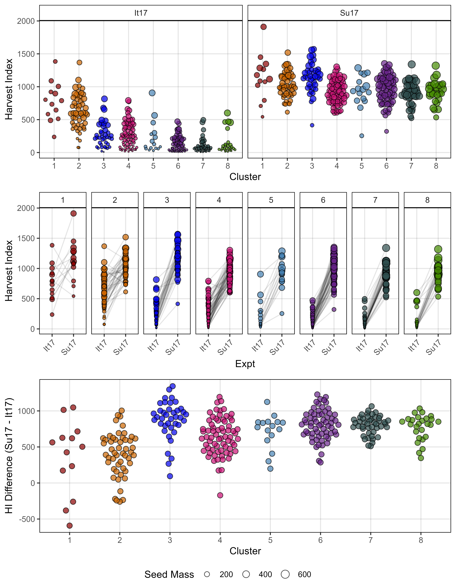
# Prep data
x1 <- bind_rows(it17_f %>% filter(Trait == "Seed.Mass") %>%
select(Plot, Expt, Entry, Name, Seed.Mass=Value),
su17_f %>% filter(Trait == "Seed.Mass") %>%
select(Plot, Expt, Entry, Name, Seed.Mass=Value) )
x2 <- bind_rows(it17_gc.v[[2]] %>% select(Plot, Expt, Entry, Name, Volume=k),
su17_gc.v[[2]] %>% select(Plot, Expt, Entry, Name, Volume=k) )
xx <- full_join(x1, x2, by = c("Plot", "Expt", "Entry", "Name")) %>%
left_join(select(myPCA, Entry, Cluster), by = "Entry") %>%
mutate(`Harvest Index` = Seed.Mass / Volume) %>%
group_by(Expt, Entry, Name, Cluster) %>%
summarise(`Harvest Index` = mean(`Harvest Index`, na.rm = T),
`Seed Mass` = mean(Seed.Mass, na.rm = T)) %>%
mutate(Expt = plyr::mapvalues(Expt, c("Italy 2017","Sutherland 2017"), c("It17", "Su17")))
# Plot
mp1 <- ggplot(xx, aes(x = Cluster, y = `Harvest Index`, fill = Cluster, size = `Seed Mass`)) +
geom_quasirandom(pch = 21, alpha = 0.7, color = "black") +
facet_grid(. ~ Expt) +
scale_fill_manual(values = myColors_Cluster, guide = F) +
scale_size_continuous(range = c(0.2,4)) +
theme_AGL
#
mp2 <- ggplot(xx, aes(x = Expt, y = `Harvest Index`, fill = Cluster, group = Entry)) +
geom_line(alpha = 0.1) +
geom_point(aes(size = `Seed Mass`), pch = 21, alpha = 0.7, color = "black") +
facet_grid(. ~ Cluster) +
scale_fill_manual(values = myColors_Cluster, guide = F) +
scale_size_continuous(range = c(0.2,4)) +
theme_AGL +
theme(axis.text.x = element_text(angle = 45, hjust = 1))
#
xx <- xx %>% select(-`Seed Mass`) %>%
spread(Expt, `Harvest Index`) %>%
mutate(Diff = `Su17` - `It17`)
mp3 <- ggplot(xx, aes(x = Cluster, y = Diff, fill = Cluster, size = `Seed Mass`)) +
geom_quasirandom(pch = 21, alpha = 0.7, color = "black", size = 2.5) +
scale_fill_manual(values = myColors_Cluster, guide = F) +
theme_AGL +
labs(y = "HI Difference (Su17 - It17)")
# Append
mp <- ggarrange(mp1, mp2, mp3, ncol = 1, nrow = 3, align = "h",
common.legend = T, legend = "bottom")
ggsave("Additional/Additional_Figure_09.png", mp,
width = 7, height = 9, dpi = 600, bg = "white")Additional Figures 10 - Harvest Index x DTF

# Prep data
y1 <- it17_f %>% filter(Trait == "Seed.Mass") %>% select(Plot, Name, Seed.Mass=Value)
y2 <- it17_gc.v[[2]] %>% select(Plot, Volume=k)
x1 <- left_join(y1, y2, by = "Plot") %>%
mutate(Expt = "Italy 2017",
`Harvest Index` = Seed.Mass / Volume)
#
y1 <- su17_f %>% filter(Trait == "Seed.Mass") %>% select(Plot, Name, Seed.Mass=Value)
y2 <- su17_gc.v[[2]] %>% select(Plot, Volume=k)
x2 <- left_join(y1, y2, by = "Plot") %>%
mutate(Expt = "Sutherland 2017",
`Harvest Index` = Seed.Mass / Volume)
xx <- bind_rows(x1, x2) %>%
group_by(Name, Expt) %>%
summarise(`Harvest Index` = mean(`Harvest Index`, na.rm = T)) %>%
left_join(select(myPCA, Name, Cluster), by = "Name") %>%
left_join(myPCAinput %>% rownames_to_column("Name") %>%
select(Name, Su17_v.perc.DTF, It17_v.perc.DTF ), by = "Name")
# Plot
mp1 <- ggplot(xx, aes(x = Expt, y = `Harvest Index`, color = Cluster)) +
geom_quasirandom(pch = 16, alpha = 0.7) +
scale_color_manual(values = myColors_Cluster) +
theme_AGL +
theme(legend.position = "none")
mp2 <- ggplot(xx %>% filter(Expt == "Italy 2017"),
aes(x = It17_v.perc.DTF, y = `Harvest Index`, color = Cluster)) +
geom_quasirandom(pch = 16, alpha = 0.7) +
scale_color_manual(values = myColors_Cluster) +
guides(color = guide_legend(nrow = 1, override.aes = list(size = 2, alpha = 1))) +
theme_AGL
mp3 <- ggplot(xx %>% filter(Expt == "Sutherland 2017"),
aes(x = Su17_v.perc.DTF, y = `Harvest Index`, color = Cluster)) +
geom_quasirandom(pch = 16, alpha = 0.7) +
scale_color_manual(values = myColors_Cluster) +
guides(color = guide_legend(nrow = 1, override.aes = list(size = 2, alpha = 1))) +
theme_AGL
# Append
mp <- ggarrange(mp2, mp3, ncol = 2, common.legend = T, legend = "top")
mp <- ggarrange(mp1, mp, ncol = 1)
ggsave("Additional/Additional_Figure_10.png", mp,
width = 6, height = 6, dpi = 600, bg = "white")Figure 06 - EnvChange

# Prep data
x1 <- left_join(it17_gc.a[[2]] %>% select(Plot, Name, Expt, Area=k),
it17_gc.h[[2]] %>% select(Plot, Height=k), by = "Plot") %>%
left_join(it17_gc.v[[2]] %>% select(Plot, Volume=k))
x2 <- left_join(ro17_gc.a[[2]] %>% select(Plot, Name, Expt, Area=k),
ro17_gc.h[[2]] %>% select(Plot, Height=k), by = "Plot") %>%
left_join(ro17_gc.v[[2]] %>% select(Plot, Volume=k))
x3 <- left_join(su17_gc.a[[2]] %>% select(Plot, Name, Expt, Area=k),
su17_gc.h[[2]] %>% select(Plot, Height=k), by = "Plot") %>%
left_join(su17_gc.v[[2]] %>% select(Plot, Volume=k))
#
xx <- bind_rows(x1, x2, x3) %>%
left_join(select(myPCA, Name, Cluster), by = "Name") %>%
select(Plot, Name, Expt, everything()) %>%
group_by( Name, Expt, Cluster) %>%
summarise_at(vars(Area, Height, Volume), funs(mean), na.rm = T)
#
yy <- xx %>%
gather(Trait, Value, Area, Height, Volume) %>%
mutate(Trait = paste("Plot", Trait)) %>%
spread(Expt, Value) %>%
mutate(EnvChange = `Italy 2017` - `Sutherland 2017`)
mp1 <- ggplot(yy, aes(x = Cluster, y = EnvChange, color = Cluster)) +
geom_hline(yintercept = 0, alpha = 0.7) +
geom_quasirandom(pch = 16, alpha = 0.7) +
theme_AGL +
theme(legend.position = "bottom",
legend.margin=margin(c(0,0,0,0)),
panel.grid.major.x = element_blank(),
axis.text.x = element_blank(),
axis.ticks.x = element_blank()) +
facet_wrap(. ~ Trait, scales = "free_y") +
scale_color_manual(values = myColors_Cluster) +
guides(color = guide_legend(nrow = 1, override.aes = list(size = 2, alpha = 1))) +
labs(title = "A)", y = "Change (It17 - Su17)", x = NULL)
#
zz <- myPCAinput %>% rownames_to_column("Name") %>%
select(Name, It17_v.perc.DTF, Su17_v.perc.DTF)
yy <- yy %>%
select(Name, Cluster, Trait, EnvChange) %>%
spread(Trait, EnvChange) %>%
left_join(zz, by = "Name" ) %>%
mutate(v.perc.DTF = It17_v.perc.DTF - Su17_v.perc.DTF,
Group = ifelse(`Plot Area` > 0 | `Plot Height` > 0, "abnormal", "normal"),
Group = ifelse(`Plot Area` > 0 & `Plot Height` > 0, "normal", Group))
#
mp2 <- ggplot(yy) +
geom_label(x = -0.3, y = 0.14, size = 3, label = "Taller\n&\nThiner") +
geom_label(x = 1.2, y = -0.05, size = 3, label = "Shorter\n&\nWider") +
geom_point(aes(x = `Plot Area`, y = `Plot Height`, color = Cluster),
pch = 16, alpha = 0.7) +
geom_point(data = yy %>% filter(Group == "abnormal"),
aes(x = `Plot Area`, y = `Plot Height`), pch = 21) +
geom_vline(xintercept = 0, size = 1, alpha = 0.7) +
geom_hline(yintercept = 0, size = 1, alpha = 0.7) +
scale_color_manual(values = myColors_Cluster) +
scale_size_continuous(range = c(0.5, 3)) +
theme_AGL +
theme(legend.position = "none") +
labs(title = "B)",
x = "Change in Plot Area (It17 - Su17)",
y = "Change in Plot Height (It17 - Su17)")
#
yy <- yy %>% ungroup() %>%
select(Name, Cluster, It17=It17_v.perc.DTF, Su17=Su17_v.perc.DTF) %>%
gather(Expt, Value, 3:4)
#
mp3 <- ggplot(yy, aes(x = Expt, y = Value, color = Cluster)) +
geom_beeswarm(pch = 16, alpha = 0.7) +
scale_color_manual(values = myColors_Cluster) +
theme_AGL +
theme(legend.position = "none") +
labs(title = "C)", y = "% of Volume Growth at Flowering")
# Append
mp <- ggarrange(mp1, ggarrange(mp2, mp3, ncol = 2, nrow = 1), ncol = 1, nrow = 2, align = "h")
ggsave("Figure_06.jpg", mp, width = 8, height = 6, dpi = 600, bg = "white")Prepare Data for GWAS
fixNames <- function(xx) {
xx %>% mutate(Name = gsub(" ", "_", Name),
Name = gsub("-", "\\.", Name),
Name = plyr::mapvalues(Name, "3156.11_AGL", "X3156.11_AGL"))
}Raw Drone Data
# Italy 2017
myT1 <- c("crop_volume_m3_excess.green.based",
"crop_area_m2_excess.green.based",
"mean_crop_height_m_excess.green.based")
myT2 <- c("Plot.Volume", "Plot.Area", "Plot.Height")
xx <- it17_d %>%
mutate(DAP = plyr::mapvalues(DAP, c(93, 101, 119, 133, 163),
c(94, 100, 118, 132, 164)),
DAP = plyr::mapvalues(DAP, c(94, 100, 118, 132, 164),
c("094","100","118","132","164"))) %>%
filter(Trait %in% myT1, DAP %in% c("094","100","118","132","164")) %>%
group_by(Name, DAP, Trait) %>%
summarise(Value_f = mean(Value_f, na.rm = T)) %>%
ungroup() %>%
mutate(Trait = plyr::mapvalues(Trait, myT1, myT2),
Trait = paste0("It17_",Trait, ".d", DAP)) %>%
select(-DAP) %>%
spread(Trait, Value_f) %>%
fixNames()
yy <- xx %>% gather(Trait, Value, 2:ncol(.)) %>% filter(!is.na(Value)) %>%
group_by(Trait) %>% summarise(n = n())
write.csv(xx, "Data_GWAS/myY_it17_d.csv", row.names = F)
# Rosthern 2017
myT1 <- c("crop_volume_m3_blue.ndvi.based",
"crop_area_m2_blue.ndvi.based",
"mean_crop_height_m_blue.ndvi.based")
xx <- ro17_d %>%
filter(Trait %in% myT1, DAP %in% c(24,32,39,40,54,61,67,74,80,89,95)) %>%
mutate(DAP = paste0("0", DAP)) %>%
group_by(Name, DAP, Trait) %>%
summarise(Value_f = mean(Value_f, na.rm = T)) %>%
ungroup() %>%
mutate(Trait = plyr::mapvalues(Trait, myT1, myT2),
Trait = paste0("Ro17_", Trait, ".d", DAP)) %>%
select(-DAP) %>%
spread(Trait, Value_f) %>%
fixNames()
sum(is.na(xx))
xx[is.na(xx)] <- NA
yy <- xx %>% gather(Trait, Value, 2:ncol(.)) %>% filter(!is.na(Value)) %>%
group_by(Trait) %>% summarise(n = n())
xx <- xx %>%
select(-Ro17_Plot.Area.d024,-Ro17_Plot.Area.d032, -Ro17_Plot.Area.d039,
-Ro17_Plot.Volume.d024, -Ro17_Plot.Volume.d032)
write.csv(xx, "Data_GWAS/myY_Ro17_d.csv", row.names = F)
#
myT1 <- c("crop_volume_m3_blue.ndvi.based",
"crop_area_m2_blue.ndvi.based",
"mean_crop_height_m_blue.ndvi.based")
xx <- su17_d %>%
filter(Trait %in% myT1, DAP %in% c(32,40,46,51,57,61,68,72,75,77,83)) %>%
mutate(DAP = paste0("0", DAP)) %>%
group_by(Name, DAP, Trait) %>%
summarise(Value_f = mean(Value_f, na.rm = T)) %>%
ungroup() %>%
mutate(Trait = plyr::mapvalues(Trait, myT1, myT2),
Trait = paste0("Su17_", Trait, ".d", DAP)) %>%
select(-DAP) %>%
spread(Trait, Value_f) %>%
fixNames()
sum(is.na(xx))
xx[is.na(xx)] <- NA
yy <- xx %>% gather(Trait, Value, 2:ncol(.)) %>% filter(!is.na(Value)) %>%
group_by(Trait) %>% summarise(n = n())
xx <- xx %>% select(-Su17_Plot.Area.d032, -Su17_Plot.Volume.d032)
write.csv(xx, "Data_GWAS/myY_Su17_d.csv", row.names = F)
#
myT1 <- c("crop_volume_m3_excess.green.based",
"crop_area_m2_excess.green.based",
"mean_crop_height_m_excess.green.based")
xx <- su18_d %>%
filter(Trait %in% myT1, DAP %in% c(61,65,68,72,76,79,86)) %>%
mutate(DAP = paste0("0", DAP)) %>%
group_by(Name, DAP, Trait) %>%
summarise(Value_f = mean(Value_f, na.rm = T)) %>%
ungroup() %>%
mutate(Trait = plyr::mapvalues(Trait, myT1, myT2),
Trait = paste0("Su18_",Trait, ".d", DAP)) %>%
select(-DAP) %>%
spread(Trait, Value_f) %>%
fixNames()
yy <- xx %>% gather(Trait, Value, 2:ncol(.)) %>% filter(!is.na(Value)) %>%
group_by(Trait) %>% summarise(n = n())
write.csv(xx, "Data_GWAS/myY_Su18_d.csv", row.names = F)Growth Curve Data
# Italy 2017
x1 <- it17_gc.v[[2]] %>% mutate(Expt = "It17_gc.v")
x2 <- it17_gc.h[[2]] %>% mutate(Expt = "It17_gc.h")
x3 <- it17_gc.a[[2]] %>% mutate(Expt = "It17_gc.a")
xx <- bind_rows(x1,x2,x3) %>%
select(Name, Expt, r, b, g.r, g.b, k,
x.min, x.mid, x.max, x.d, x.gen, auc.l, auc.e) %>%
gather(Trait, Value, 3:ncol(.)) %>%
group_by(Name, Expt, Trait) %>%
summarise(Value = mean(Value, na.rm = T)) %>%
ungroup() %>% mutate(Trait = paste(Expt, Trait, sep = ".")) %>%
select(-Expt) %>% spread(Trait, Value) %>%
fixNames()
write.csv(xx, "Data_GWAS/myY_it17_gc.csv", row.names = F)
# Rosthern 2017
x1 <- ro17_gc.v[[2]] %>% mutate(Expt = "Ro17_gc.v")
x2 <- ro17_gc.h[[2]] %>% mutate(Expt = "Ro17_gc.h")
x3 <- ro17_gc.a[[2]] %>% mutate(Expt = "Ro17_gc.a")
xx <- bind_rows(x1,x2,x3) %>%
select(Name, Expt, r, b, g.r, g.b, k,
x.min, x.mid, x.max, x.d, x.gen, auc.l, auc.e ) %>%
gather(Trait, Value, 3:ncol(.)) %>%
group_by(Name, Expt, Trait) %>%
summarise(Value = mean(Value, na.rm = T)) %>%
ungroup() %>% mutate(Trait = paste(Expt, Trait, sep = ".")) %>%
select(-Expt) %>% spread(Trait, Value) %>%
fixNames()
write.csv(xx, "Data_GWAS/myY_ro17_gc.csv", row.names = F)
# Sutherland 2017
x1 <- su17_gc.v[[2]] %>% mutate(Expt = "Su17_gc.v")
x2 <- su17_gc.h[[2]] %>% mutate(Expt = "Su17_gc.h")
x3 <- su17_gc.a[[2]] %>% mutate(Expt = "Su17_gc.a")
xx <- bind_rows(x1,x2,x3) %>%
select(Name, Expt, r, b, g.r, g.b, k,
x.min, x.mid, x.max, x.d, x.gen, auc.l, auc.e) %>%
gather(Trait, Value, 3:ncol(.)) %>%
group_by(Name, Expt, Trait) %>%
summarise(Value = mean(Value, na.rm = T)) %>%
ungroup() %>% mutate(Trait = paste(Expt, Trait, sep = ".")) %>%
select(-Expt) %>% spread(Trait, Value) %>%
fixNames()
write.csv(xx, "Data_GWAS/myY_su17_gc.csv", row.names = F)# Italy 2017
x1 <- it17_gc.a[[2]] %>%
select(Plot, Entry, Name) %>%
left_join(phenolGrowth(xd = it17_gc.a[[2]], xf = it17_f), by = "Plot") %>%
mutate(Expt = "It17_", Prefix = "gc.a.")
x2 <- it17_gc.h[[2]] %>%
select(Plot, Entry, Name) %>%
left_join(phenolGrowth(xd = it17_gc.h[[2]], xf = it17_f), by = "Plot") %>%
mutate(Expt = "It17_", Prefix = "gc.h.")
x3 <- it17_gc.v[[2]] %>%
select(Plot, Entry, Name) %>%
left_join(phenolGrowth(xd = it17_gc.v[[2]], xf = it17_f), by = "Plot") %>%
mutate(Expt = "It17_", Prefix = "gc.v.")
xx <- bind_rows(x1, x2, x3) %>%
select(Expt, Prefix, everything()) %>%
gather(Trait, Value, 6:ncol(.)) %>%
group_by(Name, Expt, Prefix, Trait) %>%
summarise(Value = mean(Value, na.rm = T)) %>%
ungroup() %>%
mutate(Trait = paste0(Expt, Prefix, Trait)) %>%
select(-Expt, -Prefix) %>%
spread(Trait, Value)
write.csv(xx, "Data_GWAS/myY_it17_pg.csv", row.names = F)
# Rosthern 2017
x1 <- ro17_gc.a[[2]] %>%
select(Plot, Entry, Name) %>%
left_join(phenolGrowth(xd = ro17_gc.a[[2]], xf = ro17_f), by = "Plot") %>%
mutate(Expt = "Ro17_", Prefix = "gc.a.")
x2 <- ro17_gc.h[[2]] %>%
select(Plot, Entry, Name) %>%
left_join(phenolGrowth(xd = ro17_gc.h[[2]], xf = ro17_f), by = "Plot") %>%
mutate(Expt = "Ro17_", Prefix = "gc.h.")
x3 <- ro17_gc.v[[2]] %>%
select(Plot, Entry, Name) %>%
left_join(phenolGrowth(xd = ro17_gc.v[[2]], xf = ro17_f), by = "Plot") %>%
mutate(Expt = "Ro17_", Prefix = "gc.v.")
xx <- bind_rows(x1, x2, x3) %>%
select(Expt, Prefix, everything()) %>%
gather(Trait, Value, 6:ncol(.)) %>%
group_by(Name, Expt, Prefix, Trait) %>%
summarise(Value = mean(Value, na.rm = T)) %>%
ungroup() %>%
mutate(Trait = paste0(Expt, Prefix, Trait)) %>%
select(-Expt, -Prefix) %>%
spread(Trait, Value)
write.csv(xx, "Data_GWAS/myY_ro17_pg.csv", row.names = F)
# Sutherland 2017
x1 <- su17_gc.a[[2]] %>%
select(Plot, Entry, Name) %>%
left_join(phenolGrowth(xd = su17_gc.a[[2]], xf = su17_f), by = "Plot") %>%
mutate(Expt = "Su17_", Prefix = "gc.a.")
x2 <- su17_gc.h[[2]] %>%
select(Plot, Entry, Name) %>%
left_join(phenolGrowth(xd = su17_gc.h[[2]], xf = su17_f), by = "Plot") %>%
mutate(Expt = "Su17_", Prefix = "gc.h.")
x3 <- su17_gc.v[[2]] %>%
select(Plot, Entry, Name) %>%
left_join(phenolGrowth(xd = su17_gc.v[[2]], xf = su17_f), by = "Plot") %>%
mutate(Expt = "Su17_", Prefix = "gc.v.")
xx <- bind_rows(x1, x2, x3) %>%
select(Expt, Prefix, everything()) %>%
gather(Trait, Value, 6:ncol(.)) %>%
group_by(Name, Expt, Prefix, Trait) %>%
summarise(Value = mean(Value, na.rm = T)) %>%
ungroup() %>%
mutate(Trait = paste0(Expt, Prefix, Trait)) %>%
select(-Expt, -Prefix) %>%
spread(Trait, Value)
write.csv(xx, "Data_GWAS/myY_su17_pg.csv", row.names = F)Manual Phenotypes
Run GWAS
Genotype data
Manual Phenotype Data
Drone Phenotype data
Growth Curve Coefficients
# devtools::install_github("jiabowang/GAPIT")
library(GAPIT3)
#
myG <- read.table("Data_GWAS/myG_LDP_GRN_RD3_MAF5_MISS25.txt", header = F)
#
myY_it17_d <- read.csv("Data_GWAS/myY_it17_d.csv")
myY_ro17_d <- read.csv("Data_GWAS/myY_ro17_d.csv")
myY_su17_d <- read.csv("Data_GWAS/myY_su17_d.csv")
myY_su18_d <- read.csv("Data_GWAS/myY_su18_d.csv")
#
myY_it17_gc <- read.csv("Data_GWAS/myY_it17_gc.csv")
myY_ro17_gc <- read.csv("Data_GWAS/myY_ro17_gc.csv")
myY_su17_gc <- read.csv("Data_GWAS/myY_su17_gc.csv")
#
myY_myF <- read.csv("Data_GWAS/myY_myF.csv")
#
setwd("GWAS_Results/")
myModels <- c("MLM","FarmCPU","BLINK")
myGAPIT <- GAPIT(Y = myY_it17_d, G = myG, PCA.total = 4,
model = myModels, Phenotype.View = F)
myGAPIT <- GAPIT(Y = myY_ro17_d, G = myG, PCA.total = 4,
model = myModels, Phenotype.View = F)
myGAPIT <- GAPIT(Y = myY_su17_d, G = myG, PCA.total = 4,
model = myModels, Phenotype.View = F)
myGAPIT <- GAPIT(Y = myY_su18_d, G = myG, PCA.total = 4,
model = myModels, Phenotype.View = F)
#
myGAPIT <- GAPIT(Y = myY_it17_gc, G = myG, PCA.total = 4,
model = myModels, Phenotype.View = F)
myGAPIT <- GAPIT(Y = myY_ro17_gc, G = myG, PCA.total = 4,
model = myModels, Phenotype.View = F)
myGAPIT <- GAPIT(Y = myY_su17_gc, G = myG, PCA.total = 4,
model = myModels, Phenotype.View = F)
#
myGAPIT <- GAPIT(Y = myY_myF, G = myG, PCA.total = 4,
model = myModels, Phenotype.View = F)Post GWAS
# devtools::install_github("derekmichaelwright/gwaspr", force = T)
library(gwaspr)
#
myTraits <- list_Traits("GWAS_Results/")
myResults <- list_Result_Files("GWAS_Results/")order_GWAS_Results(folder = "GWAS_Results/", files = myResults)
xx <- table_GWAS_Results("GWAS_Results/", myResults, threshold = 6.8, sug.threshold = 6)
write.csv(xx, "Supplemental_Table_01.csv", row.names = F)xx <- read.csv("Supplemental_Table_01.csv")
xx %>% filter(Threshold == "Significant") %>%
pull(SNP) %>% unique() %>% length()#
dna <- data.frame(stringsAsFactors = F,
Symbol = c("A", "C", "G", "T", "U", "R", "Y", "S", "W", "K", "M", "N"),
Value = c("AA","CC","GG","TT","UU","AG","CT","GC","AT","GT","AC","NN"))
#
fixNames <- function(xx) {
xx %>% mutate(Name = gsub(" ", "_", Name),
Name = gsub("-", "\\.", Name),
Name = plyr::mapvalues(Name, "3156.11_AGL", "X3156.11_AGL"))
}
#
myMColors <- c(rep("black",3), rep("darkred",4))
myVltys <- c(2,2,2, 1,1,1,1)
#
myMarkersd <- c("Lcu.1GRN.Chr2p44545877", "Lcu.1GRN.Chr5p1658484", "Lcu.1GRN.Chr6p3269280")
myMarkers <- c(myMarkersd, "Lcu.1GRN.Chr1p2884425", "Lcu.1GRN.Chr7p628672781",
"Lcu.1GRN.Chr6p22131416", "Lcu.1GRN.Chr7p649509676")
#
myG <- read.table("Data_GWAS/myG_LDP_GRN_RD3_MAF5_MISS25.txt", header = T) %>%
rename(SNP=1, Chr=3, Pos=4)Significant Markers

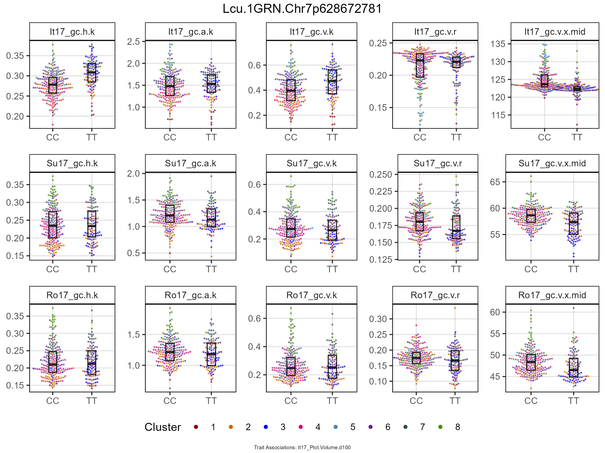

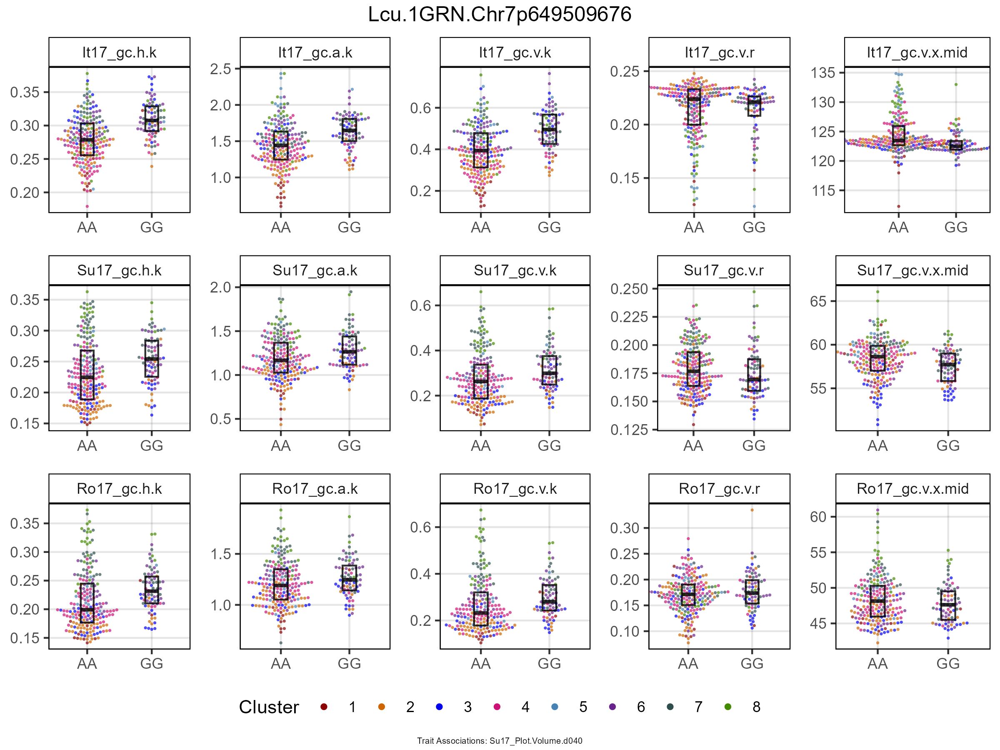
# Create function
gg_BoxPlotMarker <- function(myG, myY, trait, marker) {
#
dna <- data.frame(stringsAsFactors = F,
Symbol = c("A", "C", "G", "T", "U", "R", "Y", "S", "W", "K", "M", "N"),
Value = c("AA","CC","GG","TT","UU","AG","CT","GC","AT","GT","AC","NN"))
myPCA <- read.csv("myPCA.csv") %>%
fixNames() %>%
mutate(Cluster = factor(Cluster))
xx <- myG %>% filter(SNP == marker) %>%
gather(Name, Allele, 12:ncol(.)) %>%
select(Name, Allele) %>%
mutate(Allele = plyr::mapvalues(Allele, dna$Symbol, dna$Value),
Allele = factor(Allele, levels = dna$Value)) %>%
filter(!Allele %in% c("AG","CT","GC","AT","GT","AC","NN")) %>%
filter(!is.na(Allele)) %>%
left_join(select(myPCA, Name, Cluster)) %>%
left_join(myY, by = "Name") %>%
filter(!is.na(get(trait)))
# Plot
ggplot(xx, aes(x = Allele, y = get(trait))) +
geom_beeswarm(aes(color = Cluster), cex = 2.5, size = 0.5, pch = 16, alpha = 0.7) +
geom_boxplot(fill = alpha("white",0), color = alpha("black",0.8),
lwd = 0.5, width = 0.2, outlier.shape = NA, coef = 0) +
facet_grid(. ~ as.character(trait)) +
scale_color_manual(values = myColors_Cluster) +
theme_AGL +
theme(legend.key = element_rect(color = NA)) +
guides(colour = guide_legend(nrow = 1, override.aes = list(size = 1.5, alpha = 1))) +
labs(y = NULL, x = NULL)
}# Prep data
myY <- read.csv("Data_GWAS/myY_it17_gc.csv") %>%
as.data.frame() %>%
select(Name, It17_gc.h.k, It17_gc.a.k, It17_gc.v.k, It17_gc.v.r, It17_gc.v.x.mid) %>%
left_join(
read.csv("Data_GWAS/myY_ro17_gc.csv") %>%
as.data.frame() %>%
select(Name, Ro17_gc.h.k, Ro17_gc.a.k, Ro17_gc.v.k, Ro17_gc.v.r, Ro17_gc.v.x.mid), by = "Name") %>%
left_join(
read.csv("Data_GWAS/myY_su17_gc.csv") %>%
as.data.frame() %>%
select(Name, Su17_gc.h.k, Su17_gc.a.k, Su17_gc.v.k, Su17_gc.v.r, Su17_gc.v.x.mid), by = "Name") %>%
left_join(
read.csv("Data_GWAS/myY_myF.csv") %>%
as.data.frame() %>%
select(Name, contains("Yield")), by = "Name")
#
xx <- read.csv("Supplemental_Table_01.csv") %>%
arrange(Chr, Pos) %>%
filter(Threshold == "Significant", MAF > 0.1, !duplicated(SNP)) %>%
filter(Chr == 7)
# Plot
counter <- 1
#
for(i in xx$SNP) {
# Prep
myCaption <- read.csv("Supplemental_Table_01.csv") %>%
filter(SNP == i) %>% pull(Trait) %>% unique()
myCaption <- paste("Trait Associations:", paste(myCaption, collapse = ";"))
# Plot
mp1 <- gg_BoxPlotMarker(myG, myY, "It17_gc.h.k", i)
mp2 <- gg_BoxPlotMarker(myG, myY, "It17_gc.a.k", i)
mp3 <- gg_BoxPlotMarker(myG, myY, "It17_gc.v.k", i)
mp4 <- gg_BoxPlotMarker(myG, myY, "It17_gc.v.r", i)
mp5 <- gg_BoxPlotMarker(myG, myY, "It17_gc.v.x.mid", i)
#
mp6 <- gg_BoxPlotMarker(myG, myY, "Su17_gc.h.k", i)
mp7 <- gg_BoxPlotMarker(myG, myY, "Su17_gc.a.k", i)
mp8 <- gg_BoxPlotMarker(myG, myY, "Su17_gc.v.k", i)
mp9 <- gg_BoxPlotMarker(myG, myY, "Su17_gc.v.r", i)
mp10 <- gg_BoxPlotMarker(myG, myY, "Su17_gc.v.x.mid", i)
#
mp11 <- gg_BoxPlotMarker(myG, myY, "Ro17_gc.h.k", i)
mp12 <- gg_BoxPlotMarker(myG, myY, "Ro17_gc.a.k", i)
mp13 <- gg_BoxPlotMarker(myG, myY, "Ro17_gc.v.k", i)
mp14 <- gg_BoxPlotMarker(myG, myY, "Ro17_gc.v.r", i)
mp15 <- gg_BoxPlotMarker(myG, myY, "Ro17_gc.v.x.mid", i)
# Append
mp <- ggarrange(mp1, mp2, mp3, mp4, mp5, mp6, mp7, mp8, mp9, mp10,
mp11, mp12, mp13, mp14, mp15,
ncol = 5, nrow = 3, common.legend = T, legend = "bottom") %>%
annotate_figure(top = text_grob(i), bottom = text_grob(myCaption, size = 5))
ggsave(paste0("additional/Markers/Chr/", i, ".png"), mp,
width = 8, height = 6, bg = "white")
counter <- counter + 1
}Manhattan Plots
for(i in myTraits) {
mp <- gg_Manhattan(folder = "GWAS_Results/", trait = i, facet = F,
models = c("MLM", "FarmCPU", "BLINK"),
threshold = 6.8, sug.threshold = 6, legend.rows = 2,
vlines = myMarkers, vline.colors = myMColors)
ggsave(paste0("Additional/Manhattan/01_",i,".png"), mp,
width = 12, height = 4, bg = "white")
#
mp <- gg_Manhattan(folder = "GWAS_Results/", trait = i, facet = T,
models = c("MLM", "FarmCPU", "BLINK"),
threshold = 6.8, sug.threshold = 6, legend.rows = 2,
vlines = myMarkers, vline.colors = myMColors)
ggsave(paste0("Additional/Manhattan/02_",i,".png"), mp,
width = 12, height = 6, bg = "white")
}Figure 07 - GWAS Summary

# Prep data
xx <- read.csv("Supplemental_Table_01.csv")
# Create plotting function
gg_GWAS_Hits <- function(xx, xg = myG, myTs, myR = 1000000, myTitle = "",
myYlab = "Significant Associations",
sigThresh = round(length(myTs)/10), sigMin = 0,
vlines = NULL, vlines.types = rep(1, length(vlines)),
vline.colors = rep("red", length(vlines)) ) {
#
myCs <- c("darkgreen", "darkorange3", "darkslategray4","darkblue")
xx <- xx %>% filter(Trait %in% myTs, Threshold == "Significant") %>%
arrange(desc(P.value)) %>% mutate(Hits = NA)
#
for(i in 1:nrow(xx)) {
myChr <- xx$Chr[i]
myPos <- xx$Pos[i]
myMod <- xx$Model[i]
xi <- xx %>%
filter(Chr == myChr, Model == myMod, Pos > myPos-myR, Pos < myPos+myR)
xx$Hits[i] <- nrow(xi)
xi <- xi %>% filter(!(SNP == xx$SNP[i] & Trait == xx$Trait[i]))
xx$Pos[xx$SNP %in% xi$SNP & xx$Trait %in% xi$Trait] <- NA
}
xx <- xx %>% filter(!is.na(Pos), Hits > sigMin) %>%
mutate(Model = factor(Model, levels = c("MLM", "FarmCPU", "BLINK")))
#
ymax <- max(xx$Hits)
#
mp <- ggplot(xx, aes(x = Pos / 100000000) ) +
geom_blank(data = xg)
if(!is.null(vlines)) {
xgm <- xg %>%
filter(SNP %in% vlines) %>%
mutate(SNP = factor(SNP, levels = vlines)) %>%
arrange(SNP)
mp <- mp +
geom_vline(data = xgm, alpha = 0.7,
aes(xintercept = Pos / 100000000, color = SNP, lty = SNP)) +
scale_color_manual(name = NULL, values = vline.colors) +
scale_linetype_manual(name = NULL, values = vlines.types)
}
#
mp <- mp +
geom_point(aes(y = Hits, size = Hits, key1 = SNP,
fill = Model, shape = Model), alpha = 0.7) +
facet_grid(paste(myTitle) ~ paste("Chr", Chr),
space = "free_x", scales = "free_x") +
scale_shape_manual(values = c(21,24:25), breaks = c("MLM","FarmCPU","BLINK")) +
scale_fill_manual(values = myCs, breaks = c("MLM","FarmCPU","BLINK")) +
scale_size_continuous(range = c(0.5,3)) +
scale_x_continuous(breaks = 0:7) +
scale_y_continuous(labels = scales::label_number(accuracy = 1),
limits = c(0,ymax)) +
theme_AGL +
theme(legend.position = "bottom",
legend.key = element_rect(colour = NA)) +
guides(color = F, lty = F, size = F) +
labs(x = "100 Mbp", y = myYlab)
mp
}
# Plot
mp1 <- gg_GWAS_Hits(xx, myG, myTitle = "Manual", myYlab = "",
myTs = myTraits[grepl("Canopy.Height|Plant.Length|Biomass", myTraits)],
vlines = myMarkers, vlines.types = myVltys, vline.colors = myMColors)
mp2 <- gg_GWAS_Hits(xx, myG, myTitle = "UAV", myYlab = "Number of Significant Associations",
myTs = myTraits[grepl("Plot.Height|Plot.Area|Plot.Volume", myTraits)],
vlines = myMarkers, vlines.types = myVltys, vline.colors = myMColors)
mp3 <- gg_GWAS_Hits(xx, myG, myTitle = "Growth Curves", myYlab = "",
myTs = myTraits[grepl("gc.h|gc.a|gc.v", myTraits)],
vlines = myMarkers, vlines.types = myVltys, vline.colors = myMColors)
# Append
mp <- ggarrange(mp1, mp2, mp3, ncol = 1, nrow = 3,
common.legend = T, legend = "bottom")
ggsave("Figure_07.jpg", mp, width = 10, height = 8, dpi = 600, bg = "white")Supplemental Figure 6

# Plot
mp1 <- gg_GWAS_Hits(xx, myG, myTitle = "It17", myYlab = "",
myTs = myTraits[grepl("It17", myTraits)],
vlines = myMarkers, vlines.types = myVltys, vline.colors = myMColors)
mp2 <- gg_GWAS_Hits(xx, myG, myTitle = "Ro17", myYlab = "Number of Significant Associations",
myTs = myTraits[grepl("Ro17", myTraits)],
vlines = myMarkers, vlines.types = myVltys, vline.colors = myMColors)
mp3 <- gg_GWAS_Hits(xx, myG, myTitle = "Su17+Su18", myYlab = "",
myTs = myTraits[grepl("Su17|Su18", myTraits)],
vlines = myMarkers, vlines.types = myVltys, vline.colors = myMColors)
# Append
mp <- ggarrange(mp1, mp2, mp3, ncol = 1, nrow = 3,
common.legend = T, legend = "bottom")
ggsave("Supplemental_Figure_06.jpg", mp, width = 10, height = 8, dpi = 600, bg = "white")Supplemental Figure 7

# Plot
mp1 <- gg_GWAS_Hits(xx, myG, myTitle = "Height", myYlab = "",
myTs = myTraits[grepl("Height|gc.h|Plant.Length", myTraits)],
vlines = myMarkers, vlines.types = myVltys, vline.colors = myMColors)
mp2 <- gg_GWAS_Hits(xx, myG, myTitle = "Area", myYlab = "Number of Significant Associations",
myTs = myTraits[grepl("Area|gc.a|Width", myTraits)],
vlines = myMarkers, vlines.types = myVltys, vline.colors = myMColors)
mp3 <- gg_GWAS_Hits(xx, myG, myTitle = "Volume", myYlab = "",
myTs = myTraits[grepl("Volume|gc.v|Biomass|Plant.Mass", myTraits)],
vlines = myMarkers, vlines.types = myVltys, vline.colors = myMColors)
# Append
mp <- ggarrange(mp1, mp2, mp3, ncol = 1, nrow = 3,
common.legend = T, legend = "bottom")
ggsave("Supplemental_Figure_07.jpg", mp, width = 10, height = 8, dpi = 600, bg = "white")Figure 08 - Markers

# Prep data
myEs <- c("Su17", "It17")
myPCA <- read.csv("myPCA.csv") %>%
fixNames() %>%
mutate(Cluster = factor(Cluster))
myY <- left_join(
select(read.csv("Data_GWAS/myY_su17_gc.csv"),
Name, Su17_gc.h.k, Su17_gc.v.k, Su17_gc.v.x.mid),
select(read.csv("Data_GWAS/myY_it17_gc.csv"),
Name, It17_gc.h.k, It17_gc.v.k, It17_gc.v.x.mid),
by = "Name") %>% as.data.frame()
#
xx <- myG %>%
filter(SNP %in% myMarkers[4:7]) %>%
gather(Name, Allele, 12:ncol(.)) %>%
select(Name, SNP, Allele) %>%
mutate(Allele = plyr::mapvalues(Allele, dna$Symbol, dna$Value),
Allele = factor(Allele, levels = dna$Value)) %>%
filter(Allele %in% c("AA","CC","TT","GG")) %>%
spread(SNP, Allele) %>%
left_join(select(myPCA, Name, Cluster), by = "Name")
#
x1 <- xx %>% left_join(myY, by = "Name") %>%
gather(Expt, Value, Su17_gc.h.k, It17_gc.h.k) %>%
mutate(Expt = plyr::mapvalues(Expt, c("Su17_gc.h.k", "It17_gc.h.k"), myEs),
Expt = factor(Expt, levels = myEs))
# Plot
mp1 <- ggplot(x1 %>% filter(!is.na(get(myMarkers[4]))),
aes(x = get(myMarkers[4]), y = Value)) +
geom_beeswarm(aes(color = Cluster), pch = 16, alpha = 0.6, size = 0.75, cex = 2) +
geom_boxplot(fill = alpha("white",0), color = alpha("black",0.7),
lwd = 0.75, width = 0.1, outlier.shape = NA, coef = 0) +
facet_wrap(Expt ~ ., scales = "free_y", ncol = 2) +
scale_color_manual(values = myColors_Cluster) +
theme_AGL +
guides(colour = guide_legend(nrow = 1, override.aes = list(size = 1.5, alpha = 1))) +
labs(title = paste("A)", myMarkers[4]), y = "Plot Height", x = NULL)
#
mp2 <- ggplot(x1 %>% filter(!is.na(get(myMarkers[5]))),
aes(x = get(myMarkers[5]), y = Value)) +
geom_beeswarm(aes(color = Cluster), pch = 16, alpha = 0.6, size = 0.75, cex = 2) +
geom_boxplot(fill = alpha("white",0), color = alpha("black",0.7),
lwd = 0.75, width = 0.1, outlier.shape = NA, coef = 0) +
facet_wrap(Expt ~ ., scales = "free_y", ncol = 2) +
scale_color_manual(values = myColors_Cluster) +
theme_AGL +
guides(colour = guide_legend(nrow = 1, override.aes = list(size = 1.5, alpha = 1))) +
labs(title = paste("B)",myMarkers[5]), y = "Plot Height", x = NULL)
#
x1 <- xx %>% left_join(myY, by = "Name") %>%
gather(Expt, Value, Su17_gc.v.k, It17_gc.v.k) %>%
mutate(Expt = plyr::mapvalues(Expt, c("Su17_gc.v.k", "It17_gc.v.k"), myEs),
Expt = factor(Expt, levels = myEs))
#
mp3 <- ggplot(x1 %>% filter(!is.na(get(myMarkers[6]))),
aes(x = get(myMarkers[6]), y = Value)) +
geom_beeswarm(aes(color = Cluster), pch = 16, alpha = 0.6, size = 0.75, cex = 2) +
geom_boxplot(fill = alpha("white",0), color = alpha("black",0.7),
lwd = 0.75, width = 0.1, outlier.shape = NA, coef = 0) +
facet_wrap(Expt ~ ., scales = "free_y", ncol = 2) +
scale_color_manual(values = myColors_Cluster) +
theme_AGL +
guides(colour = guide_legend(nrow = 1, override.aes = list(size = 1.5, alpha = 1))) +
labs(title = paste("C)",myMarkers[6]), y = "Plot Volume", x = NULL)
#
x1 <- xx %>% left_join(myY, by = "Name") %>%
gather(Expt, Value, Su17_gc.v.x.mid, It17_gc.v.x.mid) %>%
mutate(Expt = plyr::mapvalues(Expt, c("Su17_gc.v.x.mid", "It17_gc.v.x.mid"), myEs),
Expt = factor(Expt, levels = myEs))
#
mp4 <- ggplot(x1 %>% filter(!is.na(get(myMarkers[7]))),
aes(x = get(myMarkers[7]), y = Value)) +
geom_beeswarm(aes(color = Cluster), pch = 16, alpha = 0.6, size = 0.75, cex = 2) +
geom_boxplot(fill = alpha("white",0), color = alpha("black",0.7),
lwd = 0.75, width = 0.1, outlier.shape = NA, coef = 0) +
facet_wrap(Expt ~ ., scales = "free_y", ncol = 2) +
scale_color_manual(values = myColors_Cluster) +
theme_AGL +
guides(colour = guide_legend(nrow = 1, override.aes = list(size = 1.5, alpha = 1))) +
labs(title = paste("D)",myMarkers[7]), y = "Volume x.mid", x = NULL)
# Append
mp <- ggarrange(mp1, mp2, mp3, mp4, ncol = 2, nrow = 2, common.legend = T, legend = "bottom")
ggsave("Figure_08.jpg", mp, width = 8, height = 6, dpi = 600, bg = "white")Additional Figures 11 - AH by FTb

# Prep data
myY <- su17_f %>% filter(Trait == "Seed.Mass") %>%
fixNames() %>%
group_by(Name) %>% summarise(Yield = mean(Value, na.rm = T))
myV <- read.csv("Data_GWAS/myY_su17_gc.csv") %>%
fixNames() %>%
as.data.frame() %>%
select(Name, Su17_gc.h.k, Su17_gc.a.k, Su17_gc.v.k)
myPCA <- read.csv("myPCA.csv") %>% select(Name, Origin) %>%
fixNames()
xx <- myG %>% filter(SNP %in% myMarkersd[3]) %>%
gather(Name, Allele, 12:ncol(.)) %>%
select(Name, SNP, Allele) %>%
mutate(Allele = plyr::mapvalues(Allele, dna$Symbol, dna$Value),
Allele = factor(Allele, levels = dna$Value)) %>%
filter(Allele %in% c("AA","CC","TT","GG")) %>%
spread(SNP, Allele) %>%
left_join(select(myPCA, Name, Origin)) %>%
left_join(myV, by = "Name") %>%
left_join(myY, by = "Name") %>%
mutate(Origin = ifelse(Origin == "Canada", Origin, "Other"),
Group = ifelse(get(myMarkersd[3]) == "CC", "Other [CC]", "Other [TT]"),
Group = ifelse(Origin == "Canada", "Canada [CC]", Group)) %>%
arrange(rev(Group))
# Plot
mp <- ggplot(xx, aes(x = Su17_gc.a.k, y = Su17_gc.h.k, size = Yield)) +
geom_point(aes(color = get(myMarkersd[3]), pch = Group), alpha = 0.7) +
geom_point(data = xx %>% filter(Origin != "Canada", get(myMarkersd[3]) == "CC"), pch = 0) +
scale_color_manual(name = expression(italic("FTb")), values = c("deeppink4", "darkgreen")) +
scale_shape_manual(name = "Origin", values = c(21,16,16),
breaks = c("Canada [CC]", "Other [CC]", "Other [TT]"),
labels = c("Canada", "Other", "Other")) +
scale_size_continuous(range = c(0.5,5)) +
facet_grid(. ~ "Sutherland, Canada 2017") +
theme_AGL +
labs(x = "Plot Area", y = "Plot Height")
ggsave("Additional/Additional_Figure_11.png", mp, width = 6, height = 4, dpi = 600)Supplemental Figure 8 - DTF Markers

# Create plotting function
gg_HAMarker <- function(xh, xa, xf, xm, myTitle = "",
dtf_range = c(45, 62), yield_limit = 300,
plotlyfilename = "Additional/Supplemental_Figure.html") {
# Prep data
xh <- xh[[2]] %>% group_by(Entry) %>%
summarise(Height = mean(k, na.rm = T))
xa <- xa[[2]] %>% group_by(Entry) %>%
summarise(Area = mean(k, na.rm = T))
xs <- xf %>% filter(Trait == "Seed.Mass") %>%
group_by(Entry) %>% summarise(Yield = mean(Value, na.rm = T))
xd <- xf %>% filter(Trait == "DTF") %>%
group_by(Entry) %>% summarise(DTF = mean(Value, na.rm = T))
myPCA <- read.csv("myPCA.csv") %>%
fixNames() %>%
mutate(Cluster = factor(Cluster))
#
xx <- myG %>% filter(SNP %in% myMarkersd) %>%
gather(Name, Allele, 12:ncol(.)) %>%
select(Name, SNP, Allele) %>%
spread(SNP, Allele) %>%
mutate(Late = ifelse(get(myMarkersd[3]) == "GG", "Late Alleles", ""),
Early = ifelse(get(myMarkersd[1]) == "CC" | get(myMarkersd[2]) == "AA", "Early Alleles", ""),
FloweringAlleles = ifelse(Late == "", Early, Late),
FloweringAlleles = ifelse(Late == "Late Alleles" & Early == "Early Alleles", "Other", FloweringAlleles),
FloweringAlleles = ifelse(FloweringAlleles == "", "Other", FloweringAlleles)) %>%
left_join(select(myPCA, Name, Entry, Cluster, Origin), by = "Name") %>%
left_join(xh, by = "Entry") %>%
left_join(xa, by = "Entry") %>%
left_join(xs, by = "Entry") %>%
left_join(xd, by = "Entry") %>%
arrange(Yield) %>%
mutate(Selection = ifelse(FloweringAlleles == "Other" & Yield >= yield_limit &
DTF >= dtf_range[1] & DTF <= dtf_range[2], "Selected", "Other"),
FloweringAlleles = factor(FloweringAlleles, levels = c("Early Alleles", "Late Alleles", "Other")))
#
mypchs <- c(2, 6, 16)
myalphas <- c(0.4, 0.9)
mysizes <- c(0.6, 2)
#
mp1 <- ggplot(xx, aes(x = Area, y = Height,
color = Cluster, pch = FloweringAlleles,
alpha = Selection, size = Selection)) +
geom_point(aes(key1 = Entry, key2 = Name, key3 = Origin,
key4 = Yield, key5 = DTF)) +
scale_color_manual(values = myColors_Cluster) +
scale_shape_manual(values = mypchs, guide = F) +
scale_alpha_manual(values = myalphas) +
scale_size_manual(values = mysizes) +
guides(color = guide_legend(nrow = 1)) +
theme_AGL +
labs(title = myTitle, y = "Plot Height", x = "Plot Area")
saveWidget(ggplotly(mp1), file=plotlyfilename)
#
mp2 <- ggplot(xx, aes(x = FloweringAlleles, y = Yield,
color = Cluster, pch = FloweringAlleles,
alpha = Selection, size = Selection)) +
geom_hline(yintercept = yield_limit) +
geom_quasirandom(alpha = 0.6) +
scale_color_manual(values = myColors_Cluster) +
scale_shape_manual(values = mypchs, guide = F) +
scale_alpha_manual(values = myalphas) +
scale_size_manual(values = mysizes) +
guides(color = guide_legend(nrow = 1)) +
theme_AGL +
labs(x = "DTF Markers", y = "Yield (g/plot)")
#
mp3 <- ggplot(xx, aes(x = FloweringAlleles, y = DTF,
color = Cluster, pch = FloweringAlleles,
alpha = Selection, size = Selection)) +
geom_hline(yintercept = dtf_range) +
geom_quasirandom(alpha = 0.6) +
scale_color_manual(values = myColors_Cluster) +
scale_shape_manual(values = mypchs, guide = F) +
scale_alpha_manual(values = myalphas) +
scale_size_manual(values = mysizes) +
guides(color = guide_legend(nrow = 1)) +
theme_AGL +
labs(x = "DTF Markers", y = "DTF")
# Append
mp <- ggarrange(mp1, mp2, mp3, ncol = 3, align = "h", common.legend = T, legend = "bottom")
#
mp
}
#
mp_a <- gg_HAMarker(xh = su17_gc.h, xa = su17_gc.a, xf = su17_f,
myTitle = "A) Sutherland, Canada 2017",
dtf_range = c(47, 62), yield_limit = 300,
plotlyfilename = "Additional/Supplemental_Figure_08_Su17.html")
#
mp_b <- gg_HAMarker(xh = it17_gc.h, xa = it17_gc.a, xf = it17_f,
myTitle = "B) Metaponto, Italy 2017",
dtf_range = c(95, 145), yield_limit = 100,
plotlyfilename = "Additional/Supplemental_Figure_08_It17.html")
#
mp <- ggarrange(mp_a, mp_b, nrow = 2, common.legend = T)
ggsave("Supplemental_Figure_08.jpg", mp, width = 10, height = 7, dpi = 600, bg = "white")Additional Figures 12


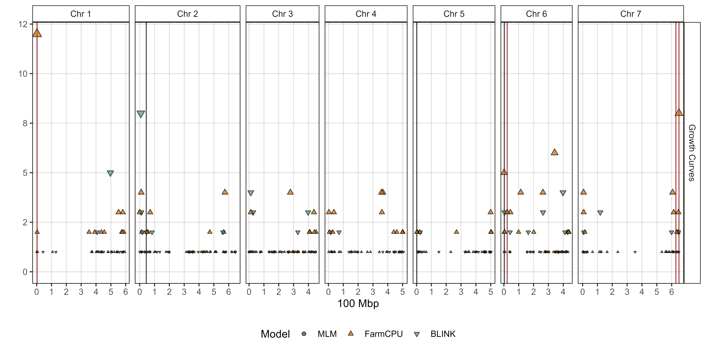


# Prep data
xx <- read.csv("Supplemental_Table_01.csv")
# Plot
mp1 <- gg_GWAS_Hits(xx, myTitle = "Manual", myYlab = "",
myTs = myTraits[grepl("Canopy.Height|Plant.Length|Biomass|Plant.Mass|Yield|Seed.Mass", myTraits)],
vlines = myMarkers, vline.colors = myMColors)
mp2 <- gg_GWAS_Hits(xx, myTitle = "UAV", myYlab = "Number of Significant Associations",
myTs = myTraits[grepl("Plot.Height|Plot.Area|Plot.Volume", myTraits)],
vlines = myMarkers, vline.colors = myMColors)
mp3 <- gg_GWAS_Hits(xx, myTitle = "Growth Curves", myYlab = "",
myTs = myTraits[grepl("gc.h|gc.a|gc.v", myTraits)],
vlines = myMarkers, vline.colors = myMColors)
#
mp4 <- gg_GWAS_Hits(xx, myTitle = "Height", myYlab = "",
myTs = myTraits[grepl("Height|gc.h|Plant.Length", myTraits)],
vlines = myMarkers, vline.colors = myMColors)
mp5 <- gg_GWAS_Hits(xx, myTitle = "Area", myYlab = "Number of Significant Associations",
myTs = myTraits[grepl("Area|gc.a|Width|Node|Lowest.Pod", myTraits)],
vlines = myMarkers, vline.colors = myMColors)
mp6 <- gg_GWAS_Hits(xx, myTitle = "Volume", myYlab = "",
myTs = myTraits[grepl("Volume|gc.v|Biomass|Plant.Mass", myTraits)],
vlines = myMarkers, vline.colors = myMColors)
#
mp7 <- gg_GWAS_Hits(xx, myTitle = "Volume + Height + Area",
myTs = c(myTraits[grepl("Height|gc.h|Plant.Length|", myTraits)],
myTraits[grepl("Area|gc.a|Width|Node|Lowest.Pod", myTraits)],
myTraits[grepl("Volume|gc.v|Biomass|Plant.Mass", myTraits)]),
vlines = myMarkers, vline.colors = myMColors, sigThresh = 20)
#
ggsave("Additional/Additional_Figure_12_1.png", mp1, width = 10, height = 5, dpi = 600)
ggsave("Additional/Additional_Figure_12_2.png", mp2, width = 10, height = 5, dpi = 600)
ggsave("Additional/Additional_Figure_12_3.png", mp3, width = 10, height = 5, dpi = 600)
ggsave("Additional/Additional_Figure_12_4.png", mp4, width = 10, height = 5, dpi = 600)
ggsave("Additional/Additional_Figure_12_5.png", mp5, width = 10, height = 5, dpi = 600)
ggsave("Additional/Additional_Figure_12_6.png", mp6, width = 10, height = 5, dpi = 600)
ggsave("Additional/Additional_Figure_12_7.png", mp7, width = 10, height = 5, dpi = 600)
#
saveWidget(ggplotly(mp1), file="Additional/Additional_Figure_12_1.html")
saveWidget(ggplotly(mp2), file="Additional/Additional_Figure_12_2.html")
saveWidget(ggplotly(mp3), file="Additional/Additional_Figure_12_3.html")
saveWidget(ggplotly(mp4), file="Additional/Additional_Figure_12_4.html")
saveWidget(ggplotly(mp5), file="Additional/Additional_Figure_12_5.html")
saveWidget(ggplotly(mp6), file="Additional/Additional_Figure_12_6.html")
saveWidget(ggplotly(mp7), file="Additional/Additional_Figure_12_7.html")Additional Figures 13


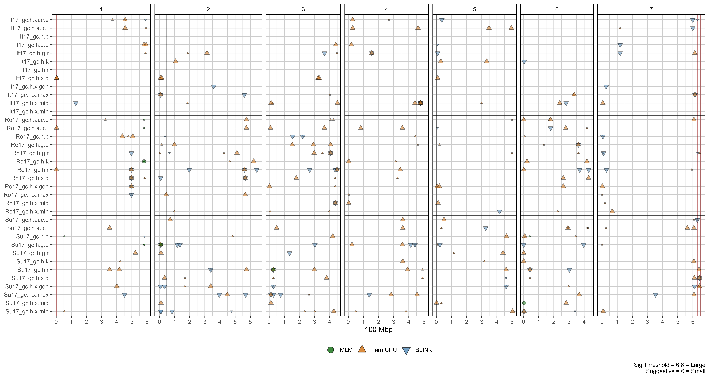


#
# Drone Data
#
myTi <- myTraits[grepl("Plot.Height", myTraits)]
mp1 <- gg_GWAS_Summary(folder = "GWAS_Results/", traits = myTi, threshold = 6.8, sug.threshold = 6,
hlines = c(7.5, 18.5, 28.5), vline.legend = F, shapes = c(21,24,25),
vlines = myMarkers, vline.colors = myMColors)
#
myTi <- myTraits[grepl("Plot.Area", myTraits)]
mp2 <- gg_GWAS_Summary(folder = "GWAS_Results/", traits = myTi, threshold = 6.8, sug.threshold = 6,
hlines = c(7.5, 17.5, 25.5), vline.legend = F, shapes = c(21,24,25),
vlines = myMarkers, vline.colors = myMColors)
#
myTi <- myTraits[grepl("Plot.Volume", myTraits)]
mp3 <- gg_GWAS_Summary(folder = "GWAS_Results/", traits = myTi, threshold = 6.8, sug.threshold = 6,
hlines = c(7.5, 17.5, 25.5), vline.legend = F, shapes = c(21,24,25),
vlines = myMarkers, vline.colors = myMColors)
#
# Growth Curves
#
myTi <- myTraits[grepl("gc.h", myTraits)]
mp4 <- gg_GWAS_Summary(folder = "GWAS_Results/", traits = myTi, threshold = 6.8, sug.threshold = 6,
hlines = c(12.5, 24.5), vline.legend = F, shapes = c(21,24,25),
vlines = myMarkers, vline.colors = myMColors)
#
myTi <- myTraits[grepl("gc.a", myTraits)]
mp5 <- gg_GWAS_Summary(folder = "GWAS_Results/", traits = myTi, threshold = 6.8, sug.threshold = 6,
hlines = c(12.5, 24.5), vline.legend = F, shapes = c(21,24,25),
vlines = myMarkers, vline.colors = myMColors)
#
myTi <- myTraits[grepl("gc.v", myTraits)]
mp6 <- gg_GWAS_Summary(folder = "GWAS_Results/", traits = myTi, threshold = 6.8, sug.threshold = 6,
hlines = c(12.5, 24.5), vline.legend = F, shapes = c(21,24,25),
vlines = myMarkers, vline.colors = myMColors)
#
# Manual Measurements
#
myTi <- c(myTraits[grepl("Canopy.Height", myTraits)],
myTraits[grepl("Plant.Length", myTraits)])
mp7 <- gg_GWAS_Summary(folder = "GWAS_Results/", traits = myTi, threshold = 6.8, sug.threshold = 6,
hlines = c(9.5), vline.legend = F, shapes = c(21,24,25),
vlines = myMarkers, vline.colors = myMColors)
#
myTi <- c(myTraits[grepl("Plot.Biomass", myTraits)],
myTraits[grepl("Straw.Biomass", myTraits)],
myTraits[grepl("Plant.Mass", myTraits)] )
mp8 <- gg_GWAS_Summary(folder = "GWAS_Results/", traits = myTi, threshold = 6.8, sug.threshold = 6,
hlines = c(4.5, 19.5), vline.legend = F, shapes = c(21,24,25),
vlines = myMarkers, vline.colors = myMColors)
#
myTi <- c(myTraits[grepl("Flower.Branch", myTraits)],
myTraits[grepl("Nodes.At.Flower", myTraits)],
myTraits[grepl("Node.Of.Flower", myTraits)],
myTraits[grepl("Lowest.Pod.H", myTraits)],
myTraits[grepl("Canopy.Width", myTraits)] )
mp9 <- gg_GWAS_Summary(folder = "GWAS_Results/", traits = myTi, threshold = 6.8, sug.threshold = 6,
hlines = c(4.5, 12.5, 16.5, 27.5), vline.legend = F, shapes = c(21,24,25),
vlines = myMarkers, vline.colors = myMColors)
#
ggsave("Additional/Additional_Figure_13_1.png", mp1, width = 15, height = 8, dpi = 600)
ggsave("Additional/Additional_Figure_13_2.png", mp2, width = 15, height = 8, dpi = 600)
ggsave("Additional/Additional_Figure_13_3.png", mp3, width = 15, height = 8, dpi = 600)
ggsave("Additional/Additional_Figure_13_4.png", mp4, width = 15, height = 8, dpi = 600)
ggsave("Additional/Additional_Figure_13_5.png", mp5, width = 15, height = 8, dpi = 600)
ggsave("Additional/Additional_Figure_13_6.png", mp6, width = 15, height = 8, dpi = 600)
ggsave("Additional/Additional_Figure_13_7.png", mp7, width = 15, height = 8, dpi = 600)
ggsave("Additional/Additional_Figure_13_8.png", mp8, width = 15, height = 8, dpi = 600)
ggsave("Additional/Additional_Figure_13_9.png", mp9, width = 15, height = 8, dpi = 600)
#
gg_GWAS_plotly(mp1, filename = "Additional/Additional_Figure_13_1.html")
gg_GWAS_plotly(mp2, filename = "Additional/Additional_Figure_13_2.html")
gg_GWAS_plotly(mp3, filename = "Additional/Additional_Figure_13_3.html")
gg_GWAS_plotly(mp4, filename = "Additional/Additional_Figure_13_4.html")
gg_GWAS_plotly(mp5, filename = "Additional/Additional_Figure_13_5.html")
gg_GWAS_plotly(mp6, filename = "Additional/Additional_Figure_13_6.html")
gg_GWAS_plotly(mp7, filename = "Additional/Additional_Figure_13_7.html")
gg_GWAS_plotly(mp8, filename = "Additional/Additional_Figure_13_8.html")
gg_GWAS_plotly(mp9, filename = "Additional/Additional_Figure_13_9.html")© Derek Michael Wright